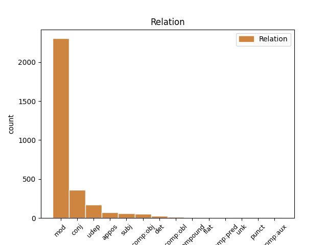
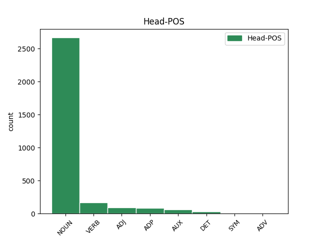
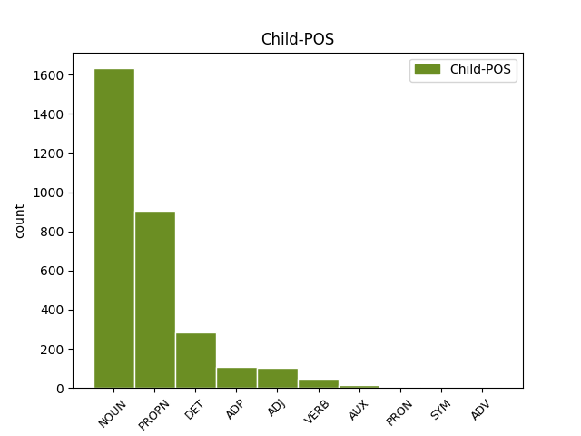

Distribution of features within this leaf



Agreement Rules sorted by frequency.
- When the dependent token is the modifer(mod) of the head token, and the head token is NOUN and the dependent token is NOUN.
1 Diplomatikoek _ _ _ _ 0 _ _ _
2 erreformistatzat _ _ _ _ 0 _ _ _
3 zuten _ _ _ _ 0 _ _ _
4 Gao _ _ _ _ 0 _ _ _
5 Changli _ _ _ _ 0 _ _ _
6 , _ _ _ _ 0 _ _ _
7 zeina _ _ _ _ 0 _ _ _
8 Zhu _ _ _ _ 0 _ _ _
9 Rongji _ _ _ _ 0 _ _ _
10 lehen _ _ _ _ 0 _ _ _
11 ministroaren ministro NOUN _ Case=Gen|Definite=Def|Number=Sing 12 mod _ _
12 itzalean itzal NOUN _ Animacy=Inan|Case=Ine|Definite=Def|Number=Sing 0 _ _ _
13 iritsi _ _ _ _ 0 _ _ _
14 baitzen _ _ _ _ 0 _ _ _
15 Gobernura _ _ _ _ 0 _ _ _
16 . _ _ _ _ 0 _ _ _
1 Boteroren Botero PROPN _ Case=Gen|Definite=Def|Number=Sing 16 mod _ _
2 ( _ _ _ _ 0 _ _ _
3 Kelme _ _ _ _ 0 _ _ _
4 ) _ _ _ _ 0 _ _ _
5 , _ _ _ _ 0 _ _ _
6 Desselen _ _ _ _ 0 _ _ _
7 ( _ _ _ _ 0 _ _ _
8 Jean _ _ _ _ 0 _ _ _
9 Delatour _ _ _ _ 0 _ _ _
10 ) _ _ _ _ 0 _ _ _
11 eta _ _ _ _ 0 _ _ _
12 Mariniren _ _ _ _ 0 _ _ _
13 ( _ _ _ _ 0 _ _ _
14 Liquigas _ _ _ _ 0 _ _ _
15 ) _ _ _ _ 0 _ _ _
16 ahalegina ahalegin NOUN _ Animacy=Inan|Case=Abs|Definite=Def|Number=Sing 0 _ _ _
17 izan _ _ _ _ 0 _ _ _
18 zen _ _ _ _ 0 _ _ _
19 balekoa _ _ _ _ 0 _ _ _
20 . _ _ _ _ 0 _ _ _
1 Oso _ _ _ _ 0 _ _ _
2 nahasi _ _ _ _ 0 _ _ _
3 ari _ _ _ _ 0 _ _ _
4 gara _ _ _ _ 0 _ _ _
5 jokatzen _ _ _ _ 0 _ _ _
6 , _ _ _ _ 0 _ _ _
7 eta _ _ _ _ 0 _ _ _
8 sasoian sasoi NOUN _ Animacy=Inan|Case=Ine|Definite=Def|Number=Sing 0 _ _ _
9 , _ _ _ _ 0 _ _ _
10 taktikan taktika NOUN _ Animacy=Inan|Case=Ine|Definite=Def|Number=Sing 8 conj _ _
11 eta _ _ _ _ 0 _ _ _
12 animoz _ _ _ _ 0 _ _ _
13 hobetu _ _ _ _ 0 _ _ _
14 behar _ _ _ _ 0 _ _ _
15 dugu _ _ _ _ 0 _ _ _
16 . _ _ _ _ 0 _ _ _
1 Wu _ _ _ _ 0 _ _ _
2 Pi-chang _ _ _ _ 0 _ _ _
3 Babes _ _ _ _ 0 _ _ _
4 Zibileko _ _ _ _ 0 _ _ _
5 nagusiaren _ _ _ _ 0 _ _ _
6 arabera _ _ _ _ 0 _ _ _
7 , _ _ _ _ 0 _ _ _
8 haize _ _ _ _ 0 _ _ _
9 bolada _ _ _ _ 0 _ _ _
10 indartsu _ _ _ _ 0 _ _ _
11 batek _ _ _ _ 0 _ _ _
12 jo _ _ _ _ 0 _ _ _
13 eta _ _ _ _ 0 _ _ _
14 hegazkina _ _ _ _ 0 _ _ _
15 bere bera DET _ Case=Gen|Number=Sing 16 mod _ _
16 bidetik bide NOUN _ Animacy=Inan|Case=Abl|Definite=Def|Number=Sing 0 _ _ _
17 atera _ _ _ _ 0 _ _ _
18 zen _ _ _ _ 0 _ _ _
19 aireratzen _ _ _ _ 0 _ _ _
20 ari _ _ _ _ 0 _ _ _
21 zen _ _ _ _ 0 _ _ _
22 unean _ _ _ _ 0 _ _ _
23 . _ _ _ _ 0 _ _ _
1 Haien _ _ _ _ 0 _ _ _
2 pausoa _ _ _ _ 0 _ _ _
3 bizkorra _ _ _ _ 0 _ _ _
4 zen _ _ _ _ 0 _ _ _
5 , _ _ _ _ 0 _ _ _
6 eta _ _ _ _ 0 _ _ _
7 espaloietatik _ _ _ _ 0 _ _ _
8 ez _ _ _ _ 0 _ _ _
9 ezik _ _ _ _ 0 _ _ _
10 erdigunetik _ _ _ _ 0 _ _ _
11 ere _ _ _ _ 0 _ _ _
12 saiatzen _ _ _ _ 0 _ _ _
13 ziren _ _ _ _ 0 _ _ _
14 , _ _ _ _ 0 _ _ _
15 autoen _ _ _ _ 0 _ _ _
16 arteko arte ADP _ Animacy=Inan|Case=Loc|Definite=Def|Number=Plur 17 udep _ _
17 meharguneak mehargune NOUN _ Animacy=Inan|Case=Abs|Definite=Def|Number=Plur 0 _ _ _
18 baliatuz _ _ _ _ 0 _ _ _
19 . _ _ _ _ 0 _ _ _
1 Iberdrolak _ _ _ _ 0 _ _ _
2 korporazio _ _ _ _ 0 _ _ _
3 izaera _ _ _ _ 0 _ _ _
4 juridikoa _ _ _ _ 0 _ _ _
5 hartzea _ _ _ _ 0 _ _ _
6 ere _ _ _ _ 0 _ _ _
7 onartuko _ _ _ _ 0 _ _ _
8 da _ _ _ _ 0 _ _ _
9 , _ _ _ _ 0 _ _ _
10 Lege _ _ _ _ 0 _ _ _
11 Elektrikoak _ _ _ _ 0 _ _ _
12 behartutako _ _ _ _ 0 _ _ _
13 hiru _ _ _ _ 0 _ _ _
14 jardueren _ _ _ _ 0 _ _ _
15 banaketara banaketa NOUN _ Case=All|Definite=Def|Number=Sing 0 _ _ _
16 ( _ _ _ _ 0 _ _ _
17 argindarraren _ _ _ _ 0 _ _ _
18 ekoizpena ekoizpen NOUN _ Animacy=Inan|Case=Abs|Definite=Def|Number=Sing 15 appos _ SpaceAfter=No
19 , _ _ _ _ 0 _ _ _
20 banaketa _ _ _ _ 0 _ _ _
21 eta _ _ _ _ 0 _ _ _
22 komertzializazioa _ _ _ _ 0 _ _ _
23 ) _ _ _ _ 0 _ _ _
24 egokitzeko _ _ _ _ 0 _ _ _
25 . _ _ _ _ 0 _ _ _
1 Vienako _ _ _ _ 0 _ _ _
2 Fiskaltzak _ _ _ _ 0 _ _ _
3 joan _ _ _ _ 0 _ _ _
4 den _ _ _ _ 0 _ _ _
5 asteartean _ _ _ _ 0 _ _ _
6 jakinarazi _ _ _ _ 0 _ _ _
7 zuen _ _ _ _ 0 _ _ _
8 Haiderren _ _ _ _ 0 _ _ _
9 eta _ _ _ _ 0 _ _ _
10 bere _ _ _ _ 0 _ _ _
11 alderdikide _ _ _ _ 0 _ _ _
12 batzuen _ _ _ _ 0 _ _ _
13 aurkako _ _ _ _ 0 _ _ _
14 ikerketa _ _ _ _ 0 _ _ _
15 hasi _ _ _ _ 0 _ _ _
16 zuela _ _ _ _ 0 _ _ _
17 , _ _ _ _ 0 _ _ _
18 botereaz botere NOUN _ Animacy=Inan|Case=Ins|Definite=Def|Number=Sing 19 udep _ _
19 abusatzeagatik abusatu VERB _ Case=Cau|Definite=Def|Number=Sing 0 _ _ _
20 eta _ _ _ _ 0 _ _ _
21 delitua _ _ _ _ 0 _ _ _
22 egitera _ _ _ _ 0 _ _ _
23 bultzatzeagatik _ _ _ _ 0 _ _ _
24 . _ _ _ _ 0 _ _ _
1 Egunotan _ _ _ _ 0 _ _ _
2 ari _ _ _ _ 0 _ _ _
3 dira _ _ _ _ 0 _ _ _
4 eztabaidatzen _ _ _ _ 0 _ _ _
5 Ukrainako _ _ _ _ 0 _ _ _
6 parlamentuan _ _ _ _ 0 _ _ _
7 Txernobilgo _ _ _ _ 0 _ _ _
8 zentral _ _ _ _ 0 _ _ _
9 nuklearraren _ _ _ _ 0 _ _ _
10 itxiera _ _ _ _ 0 _ _ _
11 eta _ _ _ _ 0 _ _ _
12 herenegun _ _ _ _ 0 _ _ _
13 Leonid _ _ _ _ 0 _ _ _
14 Kuchna _ _ _ _ 0 _ _ _
15 presidenteak _ _ _ _ 0 _ _ _
16 esan _ _ _ _ 0 _ _ _
17 zuenez _ _ _ _ 0 _ _ _
18 , _ _ _ _ 0 _ _ _
19 « _ _ _ _ 0 _ _ _
20 Txernobil _ _ _ _ 0 _ _ _
21 ixteak _ _ _ _ 0 _ _ _
22 sortuko _ _ _ _ 0 _ _ _
23 dituen _ _ _ _ 0 _ _ _
24 finantza _ _ _ _ 0 _ _ _
25 arazoak _ _ _ _ 0 _ _ _
26 eta _ _ _ _ 0 _ _ _
27 sozialak _ _ _ _ 0 _ _ _
28 gizateria _ _ _ _ 0 _ _ _
29 guztiari _ _ _ _ 0 _ _ _
30 dagozkio _ _ _ _ 0 _ _ _
31 eta _ _ _ _ 0 _ _ _
32 Ukrainak _ _ _ _ 0 _ _ _
33 eskubide _ _ _ _ 0 _ _ _
34 osoa _ _ _ _ 0 _ _ _
35 du _ _ _ _ 0 _ _ _
36 laguntza _ _ _ _ 0 _ _ _
37 teknikoa tekniko ADJ _ Case=Abs|Definite=Def|Number=Sing 0 _ _ _
38 eta _ _ _ _ 0 _ _ _
39 ekonomikoa ekonomiko ADJ _ Case=Abs|Definite=Def|Number=Sing 37 conj _ _
40 eskatzeko _ _ _ _ 0 _ _ _
41 . _ _ _ _ 0 _ _ _
1 Hygrocybe _ _ _ _ 0 _ _ _
2 gehienak _ _ _ _ 0 _ _ _
3 bezala _ _ _ _ 0 _ _ _
4 berankorra _ _ _ _ 0 _ _ _
5 da _ _ _ _ 0 _ _ _
6 , _ _ _ _ 0 _ _ _
7 Azarotik _ _ _ _ 0 _ _ _
8 aurrera _ _ _ _ 0 _ _ _
9 ernetzen _ _ _ _ 0 _ _ _
10 da _ _ _ _ 0 _ _ _
11 neguko negu NOUN _ Case=Loc|Definite=Def|Number=Sing 14 mod _ _
12 lehenengo _ _ _ _ 0 _ _ _
13 hotzaldira _ _ _ _ 0 _ _ _
14 arte arte ADP _ Animacy=Inan|Case=Abs|Definite=Def|Number=Sing 0 _ _ _
15 , _ _ _ _ 0 _ _ _
16 kare-lurretan _ _ _ _ 0 _ _ _
17 eta _ _ _ _ 0 _ _ _
18 mendiko _ _ _ _ 0 _ _ _
19 larreetako _ _ _ _ 0 _ _ _
20 belar _ _ _ _ 0 _ _ _
21 artean _ _ _ _ 0 _ _ _
22 . _ _ _ _ 0 _ _ _
1 - _ _ _ _ 0 _ _ _
2 Euskararekiko _ _ _ _ 0 _ _ _
3 interes _ _ _ _ 0 _ _ _
4 handia _ _ _ _ 0 _ _ _
5 dute _ _ _ _ 0 _ _ _
6 eta _ _ _ _ 0 _ _ _
7 euskara euskara NOUN _ Animacy=Inan|Case=Abs|Definite=Def|Number=Sing 8 comp:obj _ _
8 sustatzearen sustatu VERB _ Case=Gen|Definite=Def|Number=Sing 0 _ _ _
9 aldekoak _ _ _ _ 0 _ _ _
10 dira _ _ _ _ 0 _ _ _
11 . _ _ _ _ 0 _ _ _
1 Interesdunaren interesdun ADJ _ Case=Gen|Definite=Def|Number=Sing 2 mod _ _
2 nahia nahi NOUN _ Animacy=Inan|Case=Abs|Definite=Def|Number=Sing 0 _ _ _
3 aintzat _ _ _ _ 0 _ _ _
4 hartuko _ _ _ _ 0 _ _ _
5 da _ _ _ _ 0 _ _ _
6 eta _ _ _ _ 0 _ _ _
7 aurreko _ _ _ _ 0 _ _ _
8 puntuan _ _ _ _ 0 _ _ _
9 ezarritakoa _ _ _ _ 0 _ _ _
10 eta _ _ _ _ 0 _ _ _
11 eskatzailearen _ _ _ _ 0 _ _ _
12 inguruko _ _ _ _ 0 _ _ _
13 gainerako _ _ _ _ 0 _ _ _
14 egoerak _ _ _ _ 0 _ _ _
15 ere _ _ _ _ 0 _ _ _
16 aztertuko _ _ _ _ 0 _ _ _
17 dira _ _ _ _ 0 _ _ _
18 . _ _ _ _ 0 _ _ _
1 ZALEEK _ _ _ _ 0 _ _ _
2 gogo _ _ _ _ 0 _ _ _
3 handiz _ _ _ _ 0 _ _ _
4 itxaroten _ _ _ _ 0 _ _ _
5 zuten _ _ _ _ 0 _ _ _
6 unea _ _ _ _ 0 _ _ _
7 iritsi _ _ _ _ 0 _ _ _
8 da _ _ _ _ 0 _ _ _
9 eta _ _ _ _ 0 _ _ _
10 Gasteizko Gasteiz PROPN _ Case=Loc|Definite=Def|Number=Sing 13 mod _ _
11 Andra _ _ _ _ 0 _ _ _
12 Mari _ _ _ _ 0 _ _ _
13 Zuriaren zuri ADJ _ Case=Gen|Definite=Def|Number=Sing 0 _ _ _
14 jaietako _ _ _ _ 0 _ _ _
15 pilota _ _ _ _ 0 _ _ _
16 programaren _ _ _ _ 0 _ _ _
17 baitan _ _ _ _ 0 _ _ _
18 ikusiko _ _ _ _ 0 _ _ _
19 da _ _ _ _ 0 _ _ _
20 . _ _ _ _ 0 _ _ _
1 Concordea _ _ _ _ 0 _ _ _
2 , _ _ _ _ 0 _ _ _
3 berriz _ _ _ _ 0 _ _ _
4 , _ _ _ _ 0 _ _ _
5 16:42an _ _ _ _ 0 _ _ _
6 aireratu _ _ _ _ 0 _ _ _
7 eta _ _ _ _ 0 _ _ _
8 bi _ _ _ _ 0 _ _ _
9 minutu _ _ _ _ 0 _ _ _
10 berantago _ _ _ _ 0 _ _ _
11 Gonesse _ _ _ _ 0 _ _ _
12 hiriko hiri NOUN _ Animacy=Inan|Case=Loc|Definite=Def|Number=Sing 0 _ _ _
13 ( _ _ _ _ 0 _ _ _
14 Val-dOise Val-dOise PROPN _ Case=Abs|Definite=Def|Number=Sing 12 appos _ SpaceAfter=No
15 ) _ _ _ _ 0 _ _ _
16 hotel _ _ _ _ 0 _ _ _
17 baten _ _ _ _ 0 _ _ _
18 gainerat _ _ _ _ 0 _ _ _
19 erori _ _ _ _ 0 _ _ _
20 zen _ _ _ _ 0 _ _ _
21 . _ _ _ _ 0 _ _ _
1 Hau hau DET _ Case=Abs|Definite=Def|Number=Sing 0 _ _ _
2 guztia guzti DET _ Case=Abs|Definite=Def|Number=Sing 1 det _ _
3 denen _ _ _ _ 0 _ _ _
4 jakinetara _ _ _ _ 0 _ _ _
5 jartzen _ _ _ _ 0 _ _ _
6 da _ _ _ _ 0 _ _ _
7 . _ _ _ _ 0 _ _ _
1 Entrenamenduetan _ _ _ _ 0 _ _ _
2 eta _ _ _ _ 0 _ _ _
3 Holandan _ _ _ _ 0 _ _ _
4 jokatutako _ _ _ _ 0 _ _ _
5 partiduan partidu NOUN _ Animacy=Inan|Case=Ine|Definite=Def|Number=Sing 15 udep _ _
6 ez _ _ _ _ 0 _ _ _
7 ezik _ _ _ _ 0 _ _ _
8 , _ _ _ _ 0 _ _ _
9 taldearen _ _ _ _ 0 _ _ _
10 aurkezpenean _ _ _ _ 0 _ _ _
11 ere _ _ _ _ 0 _ _ _
12 hamaikako _ _ _ _ 0 _ _ _
13 titularra _ _ _ _ 0 _ _ _
14 izango _ _ _ _ 0 _ _ _
15 dena izan AUX _ Case=Abs|Definite=Def|Mood=Ind|Number=Sing|Number[abs]=Sing|Person[abs]=3 0 _ _ _
16 erabili _ _ _ _ 0 _ _ _
17 zuen _ _ _ _ 0 _ _ _
18 . _ _ _ _ 0 _ _ _
1 Bestetik _ _ _ _ 0 _ _ _
2 , _ _ _ _ 0 _ _ _
3 iazko _ _ _ _ 0 _ _ _
4 maiatzaren _ _ _ _ 0 _ _ _
5 13an _ _ _ _ 0 _ _ _
6 jokatu _ _ _ _ 0 _ _ _
7 zuten _ _ _ _ 0 _ _ _
8 Ligako _ _ _ _ 0 _ _ _
9 lehen _ _ _ _ 0 _ _ _
10 faseko _ _ _ _ 0 _ _ _
11 joaneko joan VERB _ Case=Loc|Definite=Def|Number=Sing|VerbForm=Part 12 mod _ _
12 partida partida NOUN _ Animacy=Inan|Case=Abs|Definite=Def|Number=Sing 0 _ _ _
13 , _ _ _ _ 0 _ _ _
14 eta _ _ _ _ 0 _ _ _
15 Tolosak _ _ _ _ 0 _ _ _
16 48-18 _ _ _ _ 0 _ _ _
17 irabazi _ _ _ _ 0 _ _ _
18 zuen _ _ _ _ 0 _ _ _
19 sei _ _ _ _ 0 _ _ _
20 entsegu _ _ _ _ 0 _ _ _
21 eginda _ _ _ _ 0 _ _ _
22 . _ _ _ _ 0 _ _ _
1 Auziaz _ _ _ _ 0 _ _ _
2 bozketa _ _ _ _ 0 _ _ _
3 ere _ _ _ _ 0 _ _ _
4 egin _ _ _ _ 0 _ _ _
5 zuten _ _ _ _ 0 _ _ _
6 , _ _ _ _ 0 _ _ _
7 bilkuraren _ _ _ _ 0 _ _ _
8 ondoren _ _ _ _ 0 _ _ _
9 magistratuetako magistratu NOUN _ Animacy=Inan|Case=Loc|Definite=Def|Number=Plur 0 _ _ _
10 batzuek batzuk DET _ Case=Erg|Definite=Def|Number=Plur 9 det _ _
11 kazetariei _ _ _ _ 0 _ _ _
12 adierazi _ _ _ _ 0 _ _ _
13 zienez _ _ _ _ 0 _ _ _
14 . _ _ _ _ 0 _ _ _
1 Almerian _ _ _ _ 0 _ _ _
2 lortutako _ _ _ _ 0 _ _ _
3 hiru _ _ _ _ 0 _ _ _
4 puntuei _ _ _ _ 0 _ _ _
5 esker _ _ _ _ 0 _ _ _
6 , _ _ _ _ 0 _ _ _
7 Eibarrek _ _ _ _ 0 _ _ _
8 Merida _ _ _ _ 0 _ _ _
9 liderrarekiko lider NOUN _ Case=Loc|Definite=Def|Number=Sing 0 _ _ _
10 eta _ _ _ _ 0 _ _ _
11 Mallorcarekiko Mallorca PROPN _ Case=Loc|Definite=Def|Number=Sing 9 conj _ _
12 aldea _ _ _ _ 0 _ _ _
13 murriztu _ _ _ _ 0 _ _ _
14 egin _ _ _ _ 0 _ _ _
15 du _ _ _ _ 0 _ _ _
16 , _ _ _ _ 0 _ _ _
17 eta _ _ _ _ 0 _ _ _
18 une _ _ _ _ 0 _ _ _
19 honetan _ _ _ _ 0 _ _ _
20 bost _ _ _ _ 0 _ _ _
21 puntura _ _ _ _ 0 _ _ _
22 ditu _ _ _ _ 0 _ _ _
23 taldeak _ _ _ _ 0 _ _ _
24 . _ _ _ _ 0 _ _ _
1 ekarrizketak _ _ _ _ 0 _ _ _
2 Jerusalemen Jerusalem PROPN _ Case=Gen|Definite=Def|Number=Sing 4 mod _ _
3 burujabetasunaren _ _ _ _ 0 _ _ _
4 inguruko inguru ADP _ Case=Loc|Definite=Def|Number=Sing 0 _ _ _
5 desadostasunak _ _ _ _ 0 _ _ _
6 blokeatu _ _ _ _ 0 _ _ _
7 ditu _ _ _ _ 0 _ _ _
8 . _ _ _ _ 0 _ _ _
1 " _ _ _ _ 0 _ _ _
2 Errepresioa _ _ _ _ 0 _ _ _
3 ez _ _ _ _ 0 _ _ _
4 da _ _ _ _ 0 _ _ _
5 bidea _ _ _ _ 0 _ _ _
6 , _ _ _ _ 0 _ _ _
7 gatazka _ _ _ _ 0 _ _ _
8 gainditzeko _ _ _ _ 0 _ _ _
9 bidea _ _ _ _ 0 _ _ _
10 Euskal _ _ _ _ 0 _ _ _
11 Herriak herri NOUN _ Case=Erg|Definite=Def|Number=Sing 13 subj _ _
12 erabakitzen _ _ _ _ 0 _ _ _
13 duena *edun AUX _ Case=Abs|Definite=Def|Mood=Ind|Number=Sing|Number[abs]=Sing|Number[erg]=Sing|Person[abs]=3|Person[erg]=3 0 _ _ _
14 onartzea _ _ _ _ 0 _ _ _
15 da _ _ _ _ 0 _ _ _
16 " _ _ _ _ 0 _ _ _
17 . _ _ _ _ 0 _ _ _
1 Maistrak maistra NOUN _ Case=Erg|Definite=Def|Number=Sing 2 subj _ _
2 agindutakoa agindu VERB _ Case=Abs|Definite=Def|Number=Sing|VerbForm=Part 0 _ _ _
3 egin _ _ _ _ 0 _ _ _
4 ostean _ _ _ _ 0 _ _ _
5 arratsalde _ _ _ _ 0 _ _ _
6 osoa _ _ _ _ 0 _ _ _
7 zeukaten _ _ _ _ 0 _ _ _
8 jolasteko _ _ _ _ 0 _ _ _
9 , _ _ _ _ 0 _ _ _
10 beti _ _ _ _ 0 _ _ _
11 ere _ _ _ _ 0 _ _ _
12 , _ _ _ _ 0 _ _ _
13 etxeko _ _ _ _ 0 _ _ _
14 mandatuak _ _ _ _ 0 _ _ _
15 egin _ _ _ _ 0 _ _ _
16 ostean _ _ _ _ 0 _ _ _
17 . _ _ _ _ 0 _ _ _
1 Estatu _ _ _ _ 0 _ _ _
2 horri _ _ _ _ 0 _ _ _
3 dagokion _ _ _ _ 0 _ _ _
4 senadoreaz _ _ _ _ 0 _ _ _
5 jabetzeko _ _ _ _ 0 _ _ _
6 borroka _ _ _ _ 0 _ _ _
7 oso _ _ _ _ 0 _ _ _
8 estua _ _ _ _ 0 _ _ _
9 da _ _ _ _ 0 _ _ _
10 , _ _ _ _ 0 _ _ _
11 Hillary _ _ _ _ 0 _ _ _
12 Clinton _ _ _ _ 0 _ _ _
13 demokrataren demokrata NOUN _ Animacy=Anim|Case=Gen|Definite=Def|Number=Sing 0 _ _ _
14 eta _ _ _ _ 0 _ _ _
15 Rick _ _ _ _ 0 _ _ _
16 A. _ _ _ _ 0 _ _ _
17 Lazio _ _ _ _ 0 _ _ _
18 errepublikanoaren _ _ _ _ 0 _ _ _
19 artean arte ADP _ Case=Ine|Definite=Def|Number=Sing 13 conj _ SpaceAfter=No
20 . _ _ _ _ 0 _ _ _
1 Belenera Belen PROPN _ Case=All|Definite=Def|Number=Sing 4 subj _ _
2 Baltasarrek _ _ _ _ 0 _ _ _
3 eraman _ _ _ _ 0 _ _ _
4 zuena *edun AUX _ Case=Abs|Definite=Def|Mood=Ind|Number=Sing|Number[abs]=Sing|Number[erg]=Sing|Person[abs]=3|Person[erg]=3 0 _ _ _
5 , _ _ _ _ 0 _ _ _
6 urrea _ _ _ _ 0 _ _ _
7 eta _ _ _ _ 0 _ _ _
8 intsentsuarekin _ _ _ _ 0 _ _ _
9 asper _ _ _ _ 0 _ _ _
10 ez _ _ _ _ 0 _ _ _
11 zitezen _ _ _ _ 0 _ _ _
12 . _ _ _ _ 0 _ _ _
1 Elkargo _ _ _ _ 0 _ _ _
2 berak _ _ _ _ 0 _ _ _
3 , _ _ _ _ 0 _ _ _
4 1995eko _ _ _ _ 0 _ _ _
5 ekainaren _ _ _ _ 0 _ _ _
6 1ean _ _ _ _ 0 _ _ _
7 ikuskatu _ _ _ _ 0 _ _ _
8 ondoren _ _ _ _ 0 _ _ _
9 , _ _ _ _ 0 _ _ _
10 950933 _ _ _ _ 0 _ _ _
11 zenbakia _ _ _ _ 0 _ _ _
12 jarri _ _ _ _ 0 _ _ _
13 zion _ _ _ _ 0 _ _ _
14 proiektu _ _ _ _ 0 _ _ _
15 horri _ _ _ _ 0 _ _ _
16 , _ _ _ _ 0 _ _ _
17 hain _ _ _ _ 0 _ _ _
18 zuzen _ _ _ _ 0 _ _ _
19 ondorengo _ _ _ _ 0 _ _ _
20 ezaugarriak _ _ _ _ 0 _ _ _
21 dituen _ _ _ _ 0 _ _ _
22 aireko _ _ _ _ 0 _ _ _
23 elektrizitate-lineari elektrizitate+-+linea NOUN _ Animacy=Inan|Case=Dat|Definite=Def|Number=Sing 24 comp:obl _ _
24 dagokionari egon VERB _ Aspect=Prog|Case=Dat|Definite=Def|Mood=Ind|Number=Sing|Number[abs]=Sing|Number[dat]=Sing|Person[abs]=3|Person[dat]=3 0 _ _ _
25 : _ _ _ _ 0 _ _ _
1 Akusazioaren _ _ _ _ 0 _ _ _
2 arabera _ _ _ _ 0 _ _ _
3 , _ _ _ _ 0 _ _ _
4 Heriotzaren _ _ _ _ 0 _ _ _
5 Karabanaren karabana NOUN _ Case=Gen|Definite=Def|Number=Sing 6 mod _ _
6 arduraduna arduradun ADJ _ Case=Abs|Definite=Def|Number=Sing 0 _ _ _
7 izan _ _ _ _ 0 _ _ _
8 zen _ _ _ _ 0 _ _ _
9 Pinochet _ _ _ _ 0 _ _ _
10 . _ _ _ _ 0 _ _ _
1 Pirrok Pirro PROPN _ Case=Erg|Definite=Def|Number=Sing 3 subj _ _
2 behin _ _ _ _ 0 _ _ _
3 irabaztearekin irabazi VERB _ Case=Com|Definite=Def|Number=Sing 0 _ _ _
4 nahikoa _ _ _ _ 0 _ _ _
5 ikasi _ _ _ _ 0 _ _ _
6 zuen _ _ _ _ 0 _ _ _
7 : _ _ _ _ 0 _ _ _
1 Vienako _ _ _ _ 0 _ _ _
2 Fiskaltzak _ _ _ _ 0 _ _ _
3 joan _ _ _ _ 0 _ _ _
4 den _ _ _ _ 0 _ _ _
5 asteartean _ _ _ _ 0 _ _ _
6 jakinarazi _ _ _ _ 0 _ _ _
7 zuen _ _ _ _ 0 _ _ _
8 Haiderren _ _ _ _ 0 _ _ _
9 eta _ _ _ _ 0 _ _ _
10 bere _ _ _ _ 0 _ _ _
11 alderdikide _ _ _ _ 0 _ _ _
12 batzuen _ _ _ _ 0 _ _ _
13 aurkako _ _ _ _ 0 _ _ _
14 ikerketa _ _ _ _ 0 _ _ _
15 hasi _ _ _ _ 0 _ _ _
16 zuela _ _ _ _ 0 _ _ _
17 , _ _ _ _ 0 _ _ _
18 botereaz _ _ _ _ 0 _ _ _
19 abusatzeagatik abusatu VERB _ Case=Cau|Definite=Def|Number=Sing 0 _ _ _
20 eta _ _ _ _ 0 _ _ _
21 delitua _ _ _ _ 0 _ _ _
22 egitera _ _ _ _ 0 _ _ _
23 bultzatzeagatik bultzatu VERB _ Case=Cau|Definite=Def|Number=Sing 19 conj _ SpaceAfter=No
24 . _ _ _ _ 0 _ _ _
1 Entzundako _ _ _ _ 0 _ _ _
2 hitzen _ _ _ _ 0 _ _ _
3 kokaleku _ _ _ _ 0 _ _ _
4 honen _ _ _ _ 0 _ _ _
5 hondamen _ _ _ _ 0 _ _ _
6 edo _ _ _ _ 0 _ _ _
7 eraldaketak _ _ _ _ 0 _ _ _
8 , _ _ _ _ 0 _ _ _
9 hauteman _ _ _ _ 0 _ _ _
10 afasia _ _ _ _ 0 _ _ _
11 eragiten _ _ _ _ 0 _ _ _
12 duela _ _ _ _ 0 _ _ _
13 proposatu _ _ _ _ 0 _ _ _
14 zuen _ _ _ _ 0 _ _ _
15 eta _ _ _ _ 0 _ _ _
16 eremu _ _ _ _ 0 _ _ _
17 honetan _ _ _ _ 0 _ _ _
18 jazotako _ _ _ _ 0 _ _ _
19 kalteak _ _ _ _ 0 _ _ _
20 , _ _ _ _ 0 _ _ _
21 norberaren norbera PRON _ Case=Gen|Definite=Def|Number=Sing 22 mod _ _
22 hizkuntzaren hizkuntza NOUN _ Animacy=Inan|Case=Gen|Definite=Def|Number=Sing 0 _ _ _
23 entzundakoaren _ _ _ _ 0 _ _ _
24 kontrola _ _ _ _ 0 _ _ _
25 galtzerakoan _ _ _ _ 0 _ _ _
26 , _ _ _ _ 0 _ _ _
27 adierazpenaren _ _ _ _ 0 _ _ _
28 koherentzi _ _ _ _ 0 _ _ _
29 eza _ _ _ _ 0 _ _ _
30 dakarrela _ _ _ _ 0 _ _ _
31 zioen _ _ _ _ 0 _ _ _
32 . _ _ _ _ 0 _ _ _
1 Egunotan _ _ _ _ 0 _ _ _
2 ari _ _ _ _ 0 _ _ _
3 dira _ _ _ _ 0 _ _ _
4 eztabaidatzen _ _ _ _ 0 _ _ _
5 Ukrainako _ _ _ _ 0 _ _ _
6 parlamentuan _ _ _ _ 0 _ _ _
7 Txernobilgo _ _ _ _ 0 _ _ _
8 zentral _ _ _ _ 0 _ _ _
9 nuklearraren _ _ _ _ 0 _ _ _
10 itxiera _ _ _ _ 0 _ _ _
11 eta _ _ _ _ 0 _ _ _
12 herenegun _ _ _ _ 0 _ _ _
13 Leonid _ _ _ _ 0 _ _ _
14 Kuchna _ _ _ _ 0 _ _ _
15 presidenteak _ _ _ _ 0 _ _ _
16 esan _ _ _ _ 0 _ _ _
17 zuenez _ _ _ _ 0 _ _ _
18 , _ _ _ _ 0 _ _ _
19 « _ _ _ _ 0 _ _ _
20 Txernobil _ _ _ _ 0 _ _ _
21 ixteak _ _ _ _ 0 _ _ _
22 sortuko _ _ _ _ 0 _ _ _
23 dituen _ _ _ _ 0 _ _ _
24 finantza _ _ _ _ 0 _ _ _
25 arazoak arazo NOUN _ Animacy=Inan|Case=Abs|Definite=Def|Number=Plur 0 _ _ _
26 eta _ _ _ _ 0 _ _ _
27 sozialak sozial ADJ _ Case=Abs|Definite=Def|Number=Plur 25 conj _ _
28 gizateria _ _ _ _ 0 _ _ _
29 guztiari _ _ _ _ 0 _ _ _
30 dagozkio _ _ _ _ 0 _ _ _
31 eta _ _ _ _ 0 _ _ _
32 Ukrainak _ _ _ _ 0 _ _ _
33 eskubide _ _ _ _ 0 _ _ _
34 osoa _ _ _ _ 0 _ _ _
35 du _ _ _ _ 0 _ _ _
36 laguntza _ _ _ _ 0 _ _ _
37 teknikoa _ _ _ _ 0 _ _ _
38 eta _ _ _ _ 0 _ _ _
39 ekonomikoa _ _ _ _ 0 _ _ _
40 eskatzeko _ _ _ _ 0 _ _ _
41 . _ _ _ _ 0 _ _ _
1 Alabaina _ _ _ _ 0 _ _ _
2 , _ _ _ _ 0 _ _ _
3 atzo _ _ _ _ 0 _ _ _
4 ipinitako _ _ _ _ 0 _ _ _
5 isunarekin _ _ _ _ 0 _ _ _
6 gaztigatu _ _ _ _ 0 _ _ _
7 egin _ _ _ _ 0 _ _ _
8 da _ _ _ _ 0 _ _ _
9 ere _ _ _ _ 0 _ _ _
10 CDUk _ _ _ _ 0 _ _ _
11 milioi _ _ _ _ 0 _ _ _
12 bat _ _ _ _ 0 _ _ _
13 markoko _ _ _ _ 0 _ _ _
14 diruketa _ _ _ _ 0 _ _ _
15 eskuratu _ _ _ _ 0 _ _ _
16 izana izan VERB _ Case=Abs|Definite=Def|Number=Sing|VerbForm=Part 0 _ _ _
17 , _ _ _ _ 0 _ _ _
18 1991. _ _ _ _ 0 _ _ _
19 urtean _ _ _ _ 0 _ _ _
20 , _ _ _ _ 0 _ _ _
21 Karl _ _ _ _ 0 _ _ _
22 Heinz _ _ _ _ 0 _ _ _
23 Schreiber _ _ _ _ 0 _ _ _
24 arma _ _ _ _ 0 _ _ _
25 saltzailearen _ _ _ _ 0 _ _ _
26 eskutik _ ADP _ Case=Abl|Definite=Def|Number=Sing 16 udep _ SpaceAfter=No
27 . _ _ _ _ 0 _ _ _
1 Handitasuna handitasun NOUN _ Animacy=Inan|Case=Abs|Definite=Def|Number=Sing 4 comp:obj _ _
2 forma _ _ _ _ 0 _ _ _
3 eta _ _ _ _ 0 _ _ _
4 eszenaratzean eszenara+tze NOUN _ Case=Ine|Definite=Def|Number=Sing 0 _ _ _
5 , _ _ _ _ 0 _ _ _
6 urtean _ _ _ _ 0 _ _ _
7 zehar _ _ _ _ 0 _ _ _
8 eztabaidatutakoei _ _ _ _ 0 _ _ _
9 ofizialtasun-agiria _ _ _ _ 0 _ _ _
10 eman _ _ _ _ 0 _ _ _
11 zitzaien _ _ _ _ 0 _ _ _
12 hitzaldi _ _ _ _ 0 _ _ _
13 eta _ _ _ _ 0 _ _ _
14 eztabaiden _ _ _ _ 0 _ _ _
15 bitartez _ _ _ _ 0 _ _ _
16 . _ _ _ _ 0 _ _ _
1 Asteazkenean asteazken NOUN _ Case=Ine|Definite=Def|Number=Sing 2 compound _ _
2 Poliziak polizia NOUN _ Case=Erg|Definite=Def|Number=Sing 0 _ _ _
3 lehergai _ _ _ _ 0 _ _ _
4 bat _ _ _ _ 0 _ _ _
5 indargabetu _ _ _ _ 0 _ _ _
6 zuen _ _ _ _ 0 _ _ _
7 Aldi _ _ _ _ 0 _ _ _
8 Baterako _ _ _ _ 0 _ _ _
9 Lan _ _ _ _ 0 _ _ _
10 Enpresa _ _ _ _ 0 _ _ _
11 baten _ _ _ _ 0 _ _ _
12 egoitzan _ _ _ _ 0 _ _ _
13 Sevillan _ _ _ _ 0 _ _ _
14 . _ _ _ _ 0 _ _ _
1 Horrela _ _ _ _ 0 _ _ _
2 , _ _ _ _ 0 _ _ _
3 bada _ _ _ _ 0 _ _ _
4 , _ _ _ _ 0 _ _ _
5 patriarkatuak _ _ _ _ 0 _ _ _
6 gizonen _ _ _ _ 0 _ _ _
7 arteko _ _ _ _ 0 _ _ _
8 dependentzia _ _ _ _ 0 _ _ _
9 eta _ _ _ _ 0 _ _ _
10 elkartasunezko _ _ _ _ 0 _ _ _
11 lokarriak lokarri NOUN _ Animacy=Inan|Case=Abs|Definite=Def|Number=Plur 0 _ _ _
12 eratzen _ _ _ _ 0 _ _ _
13 ditu _ _ _ _ 0 _ _ _
14 , _ _ _ _ 0 _ _ _
15 emakumeak _ _ _ _ 0 _ _ _
16 menderatzeko _ _ _ _ 0 _ _ _
17 bidea _ _ _ _ 0 _ _ _
18 ematen _ _ _ _ 0 _ _ _
19 dienak *edun AUX _ Case=Abs|Definite=Def|Mood=Ind|Number=Plur|Number[abs]=Sing|Number[dat]=Plur|Number[erg]=Sing|Person[abs]=3|Person[dat]=3|Person[erg]=3 11 appos _ SpaceAfter=No
20 . _ _ _ _ 0 _ _ _
1 Driver-a _ _ _ _ 0 _ _ _
2 apurtu _ _ _ _ 0 _ _ _
3 du _ _ _ _ 0 _ _ _
4 Olazabalek _ _ _ _ 0 _ _ _
5 Irlandako Irlanda PROPN _ Case=Loc|Definite=Def|Number=Sing 6 udep _ _
6 Irekian ireki VERB _ Case=Ine|Definite=Def|Number=Sing|VerbForm=Part 0 _ _ _
7 , _ _ _ _ 0 _ _ _
8 ondo _ _ _ _ 0 _ _ _
9 aritu _ _ _ _ 0 _ _ _
10 arren _ _ _ _ 0 _ _ _
11 . _ _ _ _ 0 _ _ _
1 Abuztuaren _ _ _ _ 0 _ _ _
2 12an _ _ _ _ 0 _ _ _
3 hondoratu _ _ _ _ 0 _ _ _
4 zen _ _ _ _ 0 _ _ _
5 urpekoa _ _ _ _ 0 _ _ _
6 Ba-rents _ _ _ _ 0 _ _ _
7 itsasoan itsaso NOUN _ Animacy=Inan|Case=Ine|Definite=Def|Number=Sing 0 _ _ _
8 ( _ _ _ _ 0 _ _ _
9 Artikoa artiko ADJ _ Case=Abs|Definite=Def|Number=Sing 7 appos _ SpaceAfter=No
10 ) _ _ _ _ 0 _ _ _
11 . _ _ _ _ 0 _ _ _
1 Harrezkero _ _ _ _ 0 _ _ _
2 , _ _ _ _ 0 _ _ _
3 bost _ _ _ _ 0 _ _ _
4 lurjabe _ _ _ _ 0 _ _ _
5 zuri _ _ _ _ 0 _ _ _
6 hil _ _ _ _ 0 _ _ _
7 dira _ _ _ _ 0 _ _ _
8 eta _ _ _ _ 0 _ _ _
9 oposizioko _ _ _ _ 0 _ _ _
10 gutxienez _ _ _ _ 0 _ _ _
11 25 _ _ _ _ 0 _ _ _
12 kide _ _ _ _ 0 _ _ _
13 ; _ _ _ _ 0 _ _ _
14 azken _ _ _ _ 0 _ _ _
15 horietako horiek DET _ Case=Loc|Definite=Def|Number=Plur 16 mod _ _
16 gehienak gehien DET _ Case=Abs|Definite=Def|Number=Plur 0 _ _ _
17 beltzak _ _ _ _ 0 _ _ _
18 . _ _ _ _ 0 _ _ _
1 Egunotan _ _ _ _ 0 _ _ _
2 ari _ _ _ _ 0 _ _ _
3 dira _ _ _ _ 0 _ _ _
4 eztabaidatzen _ _ _ _ 0 _ _ _
5 Ukrainako _ _ _ _ 0 _ _ _
6 parlamentuan _ _ _ _ 0 _ _ _
7 Txernobilgo _ _ _ _ 0 _ _ _
8 zentral _ _ _ _ 0 _ _ _
9 nuklearraren _ _ _ _ 0 _ _ _
10 itxiera _ _ _ _ 0 _ _ _
11 eta _ _ _ _ 0 _ _ _
12 herenegun _ _ _ _ 0 _ _ _
13 Leonid _ _ _ _ 0 _ _ _
14 Kuchna _ _ _ _ 0 _ _ _
15 presidenteak _ _ _ _ 0 _ _ _
16 esan _ _ _ _ 0 _ _ _
17 zuenez _ _ _ _ 0 _ _ _
18 , _ _ _ _ 0 _ _ _
19 « _ _ _ _ 0 _ _ _
20 Txernobil Txernobil PROPN _ Case=Abs|Definite=Def|Number=Sing 21 comp:obj _ _
21 ixteak itxi VERB _ Case=Erg|Definite=Def|Number=Sing 0 _ _ _
22 sortuko _ _ _ _ 0 _ _ _
23 dituen _ _ _ _ 0 _ _ _
24 finantza _ _ _ _ 0 _ _ _
25 arazoak _ _ _ _ 0 _ _ _
26 eta _ _ _ _ 0 _ _ _
27 sozialak _ _ _ _ 0 _ _ _
28 gizateria _ _ _ _ 0 _ _ _
29 guztiari _ _ _ _ 0 _ _ _
30 dagozkio _ _ _ _ 0 _ _ _
31 eta _ _ _ _ 0 _ _ _
32 Ukrainak _ _ _ _ 0 _ _ _
33 eskubide _ _ _ _ 0 _ _ _
34 osoa _ _ _ _ 0 _ _ _
35 du _ _ _ _ 0 _ _ _
36 laguntza _ _ _ _ 0 _ _ _
37 teknikoa _ _ _ _ 0 _ _ _
38 eta _ _ _ _ 0 _ _ _
39 ekonomikoa _ _ _ _ 0 _ _ _
40 eskatzeko _ _ _ _ 0 _ _ _
41 . _ _ _ _ 0 _ _ _
1 Aldai _ _ _ _ 0 _ _ _
2 izeneko _ _ _ _ 0 _ _ _
3 transformazio-zentroari transformazio+-+zentro NOUN _ Animacy=Inan|Case=Dat|Definite=Def|Number=Sing 0 _ _ _
4 , _ _ _ _ 0 _ _ _
5 egitura _ _ _ _ 0 _ _ _
6 trinkodun _ _ _ _ 0 _ _ _
7 prefabrikatuari prefabrikatu VERB _ Case=Dat|Definite=Def|Number=Sing|VerbForm=Part 3 appos _ _
8 ( _ _ _ _ 0 _ _ _
9 13,2 _ _ _ _ 0 _ _ _
10 kv _ _ _ _ 0 _ _ _
11 ) _ _ _ _ 0 _ _ _
12 Administrazioaren _ _ _ _ 0 _ _ _
13 baimena _ _ _ _ 0 _ _ _
14 ematea _ _ _ _ 0 _ _ _
15 eta _ _ _ _ 0 _ _ _
16 egiteko _ _ _ _ 0 _ _ _
17 proiektua _ _ _ _ 0 _ _ _
18 onartzea _ _ _ _ 0 _ _ _
19 . _ _ _ _ 0 _ _ _
1 Sezerrek _ _ _ _ 0 _ _ _
2 kritika _ _ _ _ 0 _ _ _
3 gogorrak _ _ _ _ 0 _ _ _
4 jaso _ _ _ _ 0 _ _ _
5 zituen _ _ _ _ 0 _ _ _
6 , _ _ _ _ 0 _ _ _
7 " _ _ _ _ 0 _ _ _
8 Errepublikaren _ _ _ _ 0 _ _ _
9 arerioen _ _ _ _ 0 _ _ _
10 aurka _ _ _ _ 0 _ _ _
11 bigunegia bigun ADJ _ Case=Abs|Definite=Def|Degree=Abs|Number=Sing 13 comp:pred _ SpaceAfter=No
12 " _ _ _ _ 0 _ _ _
13 izateagatik izan AUX _ Case=Cau|Definite=Def|Number=Sing 0 _ _ _
14 . _ _ _ _ 0 _ _ _
1 Hanka _ _ _ _ 0 _ _ _
2 erdian _ _ _ _ 0 _ _ _
3 du _ _ _ _ 0 _ _ _
4 , _ _ _ _ 0 _ _ _
5 zilindrikoa _ _ _ _ 0 _ _ _
6 da _ _ _ _ 0 _ _ _
7 , _ _ _ _ 0 _ _ _
8 zenbaitetan _ _ _ _ 0 _ _ _
9 oinaldean _ _ _ _ 0 _ _ _
10 erraboilduna _ _ _ _ 0 _ _ _
11 , _ _ _ _ 0 _ _ _
12 bikortsu-ezkatatsua _ _ _ _ 0 _ _ _
13 , _ _ _ _ 0 _ _ _
14 txapelaren _ _ _ _ 0 _ _ _
15 kolore _ _ _ _ 0 _ _ _
16 berekoa _ _ _ _ 0 _ _ _
17 edo _ _ _ _ 0 _ _ _
18 zertxobait _ _ _ _ 0 _ _ _
19 argiagoa _ _ _ _ 0 _ _ _
20 , _ _ _ _ 0 _ _ _
21 oinaldea oinalde NOUN _ Animacy=Inan|Case=Abs|Definite=Def|Number=Sing 22 comp:obj _ _
22 kotoitsua kotoi+!tsu ADJ _ Animacy=Inan|Case=Abs|Definite=Def|Number=Sing 0 _ _ _
23 eta _ _ _ _ 0 _ _ _
24 zurixka _ _ _ _ 0 _ _ _
25 du _ _ _ _ 0 _ _ _
26 , _ _ _ _ 0 _ _ _
27 zenbaitetan _ _ _ _ 0 _ _ _
28 hexagono _ _ _ _ 0 _ _ _
29 forma _ _ _ _ 0 _ _ _
30 duten _ _ _ _ 0 _ _ _
31 eta _ _ _ _ 0 _ _ _
32 ilunagoak _ _ _ _ 0 _ _ _
33 diren _ _ _ _ 0 _ _ _
34 mailek _ _ _ _ 0 _ _ _
35 estaltzen _ _ _ _ 0 _ _ _
36 dute _ _ _ _ 0 _ _ _
37 . _ _ _ _ 0 _ _ _
1 Era _ _ _ _ 0 _ _ _
2 horretan _ _ _ _ 0 _ _ _
3 , _ _ _ _ 0 _ _ _
4 ez _ _ _ _ 0 _ _ _
5 zaie _ _ _ _ 0 _ _ _
6 batere _ _ _ _ 0 _ _ _
7 zaila _ _ _ _ 0 _ _ _
8 egiten _ _ _ _ 0 _ _ _
9 Kubako _ _ _ _ 0 _ _ _
10 kirol _ _ _ _ 0 _ _ _
11 agintariei _ _ _ _ 0 _ _ _
12 lesionatutakoak lesionatu VERB _ Case=Abs|Definite=Def|Number=Plur|VerbForm=Part 0 _ _ _
13 , _ _ _ _ 0 _ _ _
14 goi _ _ _ _ 0 _ _ _
15 mailako _ _ _ _ 0 _ _ _
16 lehiaketak _ _ _ _ 0 _ _ _
17 utzi _ _ _ _ 0 _ _ _
18 dituzten _ _ _ _ 0 _ _ _
19 kirolariak kirolari NOUN _ Case=Abs|Definite=Def|Number=Plur 12 conj _ _
20 edo _ _ _ _ 0 _ _ _
21 desertatu _ _ _ _ 0 _ _ _
22 dutenak _ _ _ _ 0 _ _ _
23 ordezkatzea _ _ _ _ 0 _ _ _
24 . _ _ _ _ 0 _ _ _
1 Aireratu _ _ _ _ 0 _ _ _
2 eta _ _ _ _ 0 _ _ _
3 handik _ _ _ _ 0 _ _ _
4 denbora _ _ _ _ 0 _ _ _
5 laburrera _ _ _ _ 0 _ _ _
6 irrati _ _ _ _ 0 _ _ _
7 bidezko _ _ _ _ 0 _ _ _
8 kontaktua _ _ _ _ 0 _ _ _
9 galdu _ _ _ _ 0 _ _ _
10 zuen _ _ _ _ 0 _ _ _
11 kontroleko _ _ _ _ 0 _ _ _
12 arduradunekin _ _ _ _ 0 _ _ _
13 , _ _ _ _ 0 _ _ _
14 atzo _ _ _ _ 0 _ _ _
15 funtzionarioek funtzionario NOUN _ Animacy=Inan|Case=Erg|Definite=Def|Number=Plur 0 _ _ _
16 berek berak DET _ Case=Erg|Definite=Def|Number=Plur 15 appos _ _
17 jakitera _ _ _ _ 0 _ _ _
18 eman _ _ _ _ 0 _ _ _
19 zutenez _ _ _ _ 0 _ _ _
20 . _ _ _ _ 0 _ _ _
1 Bere bera DET _ Case=Gen|Number=Sing 3 mod _ _
2 aukeraren _ _ _ _ 0 _ _ _
3 zain zain ADP _ Animacy=Inan|Definite=Def|Number=Sing 0 _ _ _
4 egon _ _ _ _ 0 _ _ _
5 beharko _ _ _ _ 0 _ _ _
6 du _ _ _ _ 0 _ _ _
7 , _ _ _ _ 0 _ _ _
8 Herrera _ _ _ _ 0 _ _ _
9 izango _ _ _ _ 0 _ _ _
10 baita _ _ _ _ 0 _ _ _
11 atezain _ _ _ _ 0 _ _ _
12 titularra _ _ _ _ 0 _ _ _
13 . _ _ _ _ 0 _ _ _
1 Hainbat _ _ _ _ 0 _ _ _
2 eleberriren _ _ _ _ 0 _ _ _
3 egilea _ _ _ _ 0 _ _ _
4 da _ _ _ _ 0 _ _ _
5 - _ _ _ _ 0 _ _ _
6 dozenatik _ _ _ _ 0 _ _ _
7 gora _ _ _ _ 0 _ _ _
8 - _ _ _ _ 0 _ _ _
9 eta _ _ _ _ 0 _ _ _
10 horien _ _ _ _ 0 _ _ _
11 artean _ _ _ _ 0 _ _ _
12 Itsas _ _ _ _ 0 _ _ _
13 barneko barne NOUN _ Case=Loc|Definite=Def|Number=Sing 0 _ _ _
14 emakumea emakume NOUN _ Animacy=Anim|Case=Abs|Definite=Def|Number=Sing 13 flat _ SpaceAfter=No
15 , _ _ _ _ 0 _ _ _
16 Odol _ _ _ _ 0 _ _ _
17 gorria _ _ _ _ 0 _ _ _
18 eta _ _ _ _ 0 _ _ _
19 aipatua _ _ _ _ 0 _ _ _
20 dugun _ _ _ _ 0 _ _ _
21 Schindlerren _ _ _ _ 0 _ _ _
22 untzia _ _ _ _ 0 _ _ _
23 dira _ _ _ _ 0 _ _ _
24 . _ _ _ _ 0 _ _ _
1 Bizitza _ _ _ _ 0 _ _ _
2 da _ _ _ _ 0 _ _ _
3 ibai _ _ _ _ 0 _ _ _
4 bat _ _ _ _ 0 _ _ _
5 , _ _ _ _ 0 _ _ _
6 lardaskatuta _ _ _ _ 0 _ _ _
7 eta _ _ _ _ 0 _ _ _
8 kutsatuta _ _ _ _ 0 _ _ _
9 egon _ _ _ _ 0 _ _ _
10 arren _ _ _ _ 0 _ _ _
11 , _ _ _ _ 0 _ _ _
12 ilusio _ _ _ _ 0 _ _ _
13 eta _ _ _ _ 0 _ _ _
14 amets _ _ _ _ 0 _ _ _
15 emaria _ _ _ _ 0 _ _ _
16 daraman _ _ _ _ 0 _ _ _
17 bitartean _ _ _ _ 0 _ _ _
18 , _ _ _ _ 0 _ _ _
19 zentzuren _ _ _ _ 0 _ _ _
20 bat _ _ _ _ 0 _ _ _
21 duena ukan VERB _ Aspect=Prog|Case=Abs|Definite=Def|Mood=Ind|Number=Sing|Number[abs]=Sing|Number[erg]=Sing|Person[abs]=3|Person[erg]=3 0 _ _ _
22 eta _ _ _ _ 0 _ _ _
23 inoiz _ _ _ _ 0 _ _ _
24 lehortzen _ _ _ _ 0 _ _ _
25 ez _ _ _ _ 0 _ _ _
26 dena izan AUX _ Case=Abs|Definite=Def|Mood=Ind|Number=Sing|Number[abs]=Sing|Person[abs]=3 21 conj _ SpaceAfter=No
27 . _ _ _ _ 0 _ _ _
1 Herritik _ _ _ _ 0 _ _ _
2 hau hau DET _ Case=Abs|Definite=Def|Number=Sing 3 comp:obj _ _
3 aldentzearekin aldendu VERB _ Case=Com|Definite=Def|Number=Sing 0 _ _ _
4 desagertu _ _ _ _ 0 _ _ _
5 egiten _ _ _ _ 0 _ _ _
6 da _ _ _ _ 0 _ _ _
7 Udal _ _ _ _ 0 _ _ _
8 Bandatik _ _ _ _ 0 _ _ _
9 Antsorena _ _ _ _ 0 _ _ _
10 deitura _ _ _ _ 0 _ _ _
11 , _ _ _ _ 0 _ _ _
12 hamarkada _ _ _ _ 0 _ _ _
13 batean _ _ _ _ 0 _ _ _
14 zehar _ _ _ _ 0 _ _ _
15 bere _ _ _ _ 0 _ _ _
16 ibilbidea _ _ _ _ 0 _ _ _
17 egin _ _ _ _ 0 _ _ _
18 ondoan _ _ _ _ 0 _ _ _
19 . _ _ _ _ 0 _ _ _
1 Sail _ _ _ _ 0 _ _ _
2 honetan _ _ _ _ 0 _ _ _
3 azterlan _ _ _ _ 0 _ _ _
4 eta _ _ _ _ 0 _ _ _
5 ikerlanak _ _ _ _ 0 _ _ _
6 aurki _ _ _ _ 0 _ _ _
7 ditzakegu _ _ _ _ 0 _ _ _
8 , _ _ _ _ 0 _ _ _
9 maila _ _ _ _ 0 _ _ _
10 teorikoan teoriko ADJ _ Case=Ine|Definite=Def|Number=Sing 0 _ _ _
11 edo _ _ _ _ 0 _ _ _
12 enpirikoan enpiriko NOUN _ Case=Ine|Definite=Def|Number=Sing 10 conj _ _
13 alderdi _ _ _ _ 0 _ _ _
14 zehatzak _ _ _ _ 0 _ _ _
15 edo _ _ _ _ 0 _ _ _
16 orokorrak _ _ _ _ 0 _ _ _
17 aztertzen _ _ _ _ 0 _ _ _
18 dituztenak _ _ _ _ 0 _ _ _
19 . _ _ _ _ 0 _ _ _
1 Sobiet _ _ _ _ 0 _ _ _
2 Batasunean _ _ _ _ 0 _ _ _
3 perestroika-rekin _ _ _ _ 0 _ _ _
4 hasi _ _ _ _ 0 _ _ _
5 zenak _ _ _ _ 0 _ _ _
6 eta _ _ _ _ 0 _ _ _
7 Hungarian Hungaria PROPN _ Case=Ine|Definite=Def|Number=Sing 12 udep _ _
8 eta _ _ _ _ 0 _ _ _
9 Polonian _ _ _ _ 0 _ _ _
10 segida _ _ _ _ 0 _ _ _
11 izan _ _ _ _ 0 _ _ _
12 zuenak *edun AUX _ Case=Erg|Definite=Def|Mood=Ind|Number=Sing|Number[abs]=Sing|Number[erg]=Sing|Person[abs]=3|Person[erg]=3 0 _ _ _
13 , _ _ _ _ 0 _ _ _
14 itxuran _ _ _ _ 0 _ _ _
15 bederen _ _ _ _ 0 _ _ _
16 ez _ _ _ _ 0 _ _ _
17 zuen _ _ _ _ 0 _ _ _
18 ondoriorik _ _ _ _ 0 _ _ _
19 izan _ _ _ _ 0 _ _ _
20 AEDn _ _ _ _ 0 _ _ _
21 . _ _ _ _ 0 _ _ _
1 Era _ _ _ _ 0 _ _ _
2 horretan _ _ _ _ 0 _ _ _
3 , _ _ _ _ 0 _ _ _
4 ez _ _ _ _ 0 _ _ _
5 zaie _ _ _ _ 0 _ _ _
6 batere _ _ _ _ 0 _ _ _
7 zaila _ _ _ _ 0 _ _ _
8 egiten _ _ _ _ 0 _ _ _
9 Kubako _ _ _ _ 0 _ _ _
10 kirol _ _ _ _ 0 _ _ _
11 agintariei _ _ _ _ 0 _ _ _
12 lesionatutakoak _ _ _ _ 0 _ _ _
13 , _ _ _ _ 0 _ _ _
14 goi _ _ _ _ 0 _ _ _
15 mailako _ _ _ _ 0 _ _ _
16 lehiaketak _ _ _ _ 0 _ _ _
17 utzi _ _ _ _ 0 _ _ _
18 dituzten _ _ _ _ 0 _ _ _
19 kirolariak kirolari NOUN _ Case=Abs|Definite=Def|Number=Plur 0 _ _ _
20 edo _ _ _ _ 0 _ _ _
21 desertatu _ _ _ _ 0 _ _ _
22 dutenak *edun AUX _ Case=Abs|Definite=Def|Mood=Ind|Number=Plur|Number[abs]=Sing|Number[erg]=Plur|Person[abs]=3|Person[erg]=3 19 conj _ _
23 ordezkatzea _ _ _ _ 0 _ _ _
24 . _ _ _ _ 0 _ _ _
1 Bere bera DET _ Case=Gen|Number=Sing 2 mod _ _
2 onera on ADJ _ Case=All|Definite=Def|Number=Sing 0 _ _ _
3 itzuli _ _ _ _ 0 _ _ _
4 behar _ _ _ _ 0 _ _ _
5 du _ _ _ _ 0 _ _ _
6 . _ _ _ _ 0 _ _ _
1 Hildakoetako hildako NOUN _ Animacy=Anim|Case=Loc|Definite=Def|Number=Plur 2 mod _ _
2 gehienak gehien DET _ Case=Abs|Definite=Def|Number=Plur 0 _ _ _
3 palestinarrak _ _ _ _ 0 _ _ _
4 dira _ _ _ _ 0 _ _ _
5 , _ _ _ _ 0 _ _ _
6 baina _ _ _ _ 0 _ _ _
7 gutxienez _ _ _ _ 0 _ _ _
8 sei _ _ _ _ 0 _ _ _
9 , _ _ _ _ 0 _ _ _
10 Israelgo _ _ _ _ 0 _ _ _
11 herritar _ _ _ _ 0 _ _ _
12 arabiarrak _ _ _ _ 0 _ _ _
13 . _ _ _ _ 0 _ _ _
1 Hirurek _ _ _ _ 0 _ _ _
2 , _ _ _ _ 0 _ _ _
3 batzuk _ _ _ _ 0 _ _ _
4 bultzatuz _ _ _ _ 0 _ _ _
5 , _ _ _ _ 0 _ _ _
6 beste _ _ _ _ 0 _ _ _
7 batzuei batzuk DET _ Case=Dat|Definite=Def|Number=Plur 9 comp:obl _ _
8 itzuri _ _ _ _ 0 _ _ _
9 eginez egin VERB _ Case=Ins|Definite=Def|Number=Plur|VerbForm=Part 0 _ _ _
10 , _ _ _ _ 0 _ _ _
11 aurrera _ _ _ _ 0 _ _ _
12 jarraitzen _ _ _ _ 0 _ _ _
13 zuten _ _ _ _ 0 _ _ _
14 Pierresen _ _ _ _ 0 _ _ _
15 lagunaren _ _ _ _ 0 _ _ _
16 etxerat _ _ _ _ 0 _ _ _
17 . _ _ _ _ 0 _ _ _
1 Estelar _ _ _ _ 0 _ _ _
2 lehiatua lehiatu VERB _ Case=Abs|Definite=Def|Number=Sing|VerbForm=Part 0 _ _ _
3 eta _ _ _ _ 0 _ _ _
4 dotorea dotore ADJ _ Case=Abs|Definite=Def|Number=Sing 2 conj _ _
5 irten _ _ _ _ 0 _ _ _
6 zen _ _ _ _ 0 _ _ _
7 . _ _ _ _ 0 _ _ _
1 San _ _ _ _ 0 _ _ _
2 Cirano _ _ _ _ 0 _ _ _
3 taldean _ _ _ _ 0 _ _ _
4 aritu _ _ _ _ 0 _ _ _
5 da _ _ _ _ 0 _ _ _
6 , _ _ _ _ 0 _ _ _
7 eta _ _ _ _ 0 _ _ _
8 Hegoameriketako Hegoamerika PROPN _ Case=Ess|Definite=Def|Number=Sing 9 compound _ _
9 Kopa kopa NOUN _ Case=Abs|Definite=Def|Number=Sing 0 _ _ _
10 irabazi _ _ _ _ 0 _ _ _
11 zuen _ _ _ _ 0 _ _ _
12 . _ _ _ _ 0 _ _ _
1 Garraiolarien _ _ _ _ 0 _ _ _
2 greba greba NOUN _ Case=Abs|Definite=Def|Number=Sing 0 _ _ _
3 ia _ _ _ _ 0 _ _ _
4 erabatekoa erabateko ADJ _ Case=Abs|Definite=Def|Number=Sing 2 comp:pred _ _
5 izan _ _ _ _ 0 _ _ _
6 da _ _ _ _ 0 _ _ _
7 Hego _ _ _ _ 0 _ _ _
8 Euskal _ _ _ _ 0 _ _ _
9 Herrian _ _ _ _ 0 _ _ _
10 . _ _ _ _ 0 _ _ _
1 Itxura _ _ _ _ 0 _ _ _
2 batean _ _ _ _ 0 _ _ _
3 , _ _ _ _ 0 _ _ _
4 batzuk batzuk DET _ Case=Abs|Definite=Def|Number=Plur 0 _ _ _
5 eta _ _ _ _ 0 _ _ _
6 besteak beste DET _ Case=Abs|Definite=Def|Number=Plur 4 conj _ _
7 aldenduta _ _ _ _ 0 _ _ _
8 , _ _ _ _ 0 _ _ _
9 hobeto _ _ _ _ 0 _ _ _
10 hezi _ _ _ _ 0 _ _ _
11 daitezke _ _ _ _ 0 _ _ _
12 bai _ _ _ _ 0 _ _ _
13 neskak _ _ _ _ 0 _ _ _
14 eta _ _ _ _ 0 _ _ _
15 bai _ _ _ _ 0 _ _ _
16 mutilak _ _ _ _ 0 _ _ _
17 . _ _ _ _ 0 _ _ _
1 Konposatuak _ _ _ _ 0 _ _ _
2 , _ _ _ _ 0 _ _ _
3 prozedura _ _ _ _ 0 _ _ _
4 kimikoak _ _ _ _ 0 _ _ _
5 erabiliz _ _ _ _ 0 _ _ _
6 beste _ _ _ _ 0 _ _ _
7 sinpleago _ _ _ _ 0 _ _ _
8 batzuetan _ _ _ _ 0 _ _ _
9 bana _ _ _ _ 0 _ _ _
10 daitezkeen _ _ _ _ 0 _ _ _
11 substantzia _ _ _ _ 0 _ _ _
12 puruak _ _ _ _ 0 _ _ _
13 dira _ _ _ _ 0 _ _ _
14 , _ _ _ _ 0 _ _ _
15 eta _ _ _ _ 0 _ _ _
16 bakunak bakun ADJ _ Case=Abs|Definite=Def|Number=Plur 0 _ _ _
17 , _ _ _ _ 0 _ _ _
18 berriz _ _ _ _ 0 _ _ _
19 , _ _ _ _ 0 _ _ _
20 metodo _ _ _ _ 0 _ _ _
21 kimikoak _ _ _ _ 0 _ _ _
22 erabiliz _ _ _ _ 0 _ _ _
23 ere _ _ _ _ 0 _ _ _
24 sinpleagoetan _ _ _ _ 0 _ _ _
25 bana _ _ _ _ 0 _ _ _
26 ezin _ _ _ _ 0 _ _ _
27 daitezkeenak *edin AUX _ Case=Abs|Definite=Def|Mood=Pot|Number=Plur|Number[abs]=Plur|Person[abs]=3 16 mod _ SpaceAfter=No
28 . _ _ _ _ 0 _ _ _
1 Arabakoa _ _ _ _ 0 _ _ _
2 da _ _ _ _ 0 _ _ _
3 , _ _ _ _ 0 _ _ _
4 Gamarra _ _ _ _ 0 _ _ _
5 ingurukoa _ _ _ _ 0 _ _ _
6 , _ _ _ _ 0 _ _ _
7 eta _ _ _ _ 0 _ _ _
8 Gamesa Gamesa PROPN _ Case=Abs|Definite=Def|Number=Sing 10 comp:obj _ _
9 du _ _ _ _ 0 _ _ _
10 izena izen NOUN _ Case=Abs|Definite=Def|Number=Sing 0 _ _ _
11 . _ _ _ _ 0 _ _ _
1 Lorea _ _ _ _ 0 _ _ _
2 duten _ _ _ _ 0 _ _ _
3 landareak _ _ _ _ 0 _ _ _
4 lorontzi _ _ _ _ 0 _ _ _
5 txikietan _ _ _ _ 0 _ _ _
6 eduki _ _ _ _ 0 _ _ _
7 behar _ _ _ _ 0 _ _ _
8 dira _ _ _ _ 0 _ _ _
9 eta _ _ _ _ 0 _ _ _
10 birlandatuz _ _ _ _ 0 _ _ _
11 gero _ _ _ _ 0 _ _ _
12 , _ _ _ _ 0 _ _ _
13 diametroa _ _ _ _ 0 _ _ _
14 2 _ _ _ _ 0 _ _ _
15 edo _ _ _ _ 0 _ _ _
16 3 _ _ _ _ 0 _ _ _
17 cm cm SYM _ Case=Abs|Definite=Def|Number=Sing 0 _ _ _
18 handiagoa handi ADJ _ Case=Abs|Definite=Def|Degree=Cmp|Number=Sing 17 mod _ _
19 duen _ _ _ _ 0 _ _ _
20 lorontzia _ _ _ _ 0 _ _ _
21 aukeratu _ _ _ _ 0 _ _ _
22 . _ _ _ _ 0 _ _ _
1 Txapelak _ _ _ _ 0 _ _ _
2 2-4 _ _ _ _ 0 _ _ _
3 cm-ko cm SYM _ Case=Loc|Definite=Def|Number=Sing 4 mod _ _
4 zabalera zabalera NOUN _ Animacy=Inan|Case=Abs|Definite=Def|Number=Sing 0 _ _ _
5 du _ _ _ _ 0 _ _ _
6 eta _ _ _ _ 0 _ _ _
7 beherantz _ _ _ _ 0 _ _ _
8 biltzen _ _ _ _ 0 _ _ _
9 diren _ _ _ _ 0 _ _ _
10 bi _ _ _ _ 0 _ _ _
11 gingilez _ _ _ _ 0 _ _ _
12 osaturik _ _ _ _ 0 _ _ _
13 dago _ _ _ _ 0 _ _ _
14 , _ _ _ _ 0 _ _ _
15 eta _ _ _ _ 0 _ _ _
16 bizikleta-silinaren _ _ _ _ 0 _ _ _
17 forma _ _ _ _ 0 _ _ _
18 izan _ _ _ _ 0 _ _ _
19 ohi _ _ _ _ 0 _ _ _
20 du _ _ _ _ 0 _ _ _
21 . _ _ _ _ 0 _ _ _
1 Andereñoak _ _ _ _ 0 _ _ _
2 Kepa _ _ _ _ 0 _ _ _
3 besoetan _ _ _ _ 0 _ _ _
4 hartu _ _ _ _ 0 _ _ _
5 eta _ _ _ _ 0 _ _ _
6 autobuseko _ _ _ _ 0 _ _ _
7 lehenengo _ _ _ _ 0 _ _ _
8 eserlekura _ _ _ _ 0 _ _ _
9 eraman _ _ _ _ 0 _ _ _
10 zuen _ _ _ _ 0 _ _ _
11 , _ _ _ _ 0 _ _ _
12 haizeak haize NOUN _ Animacy=Inan|Case=Erg|Definite=Def|Number=Sing 13 subj _ _
13 jotzeko jo+tze NOUN _ Case=Loc|Definite=Def|Number=Sing 0 _ _ _
14 . _ _ _ _ 0 _ _ _
1 Sabin _ _ _ _ 0 _ _ _
2 Intxaurraga _ _ _ _ 0 _ _ _
3 eta _ _ _ _ 0 _ _ _
4 Inazio _ _ _ _ 0 _ _ _
5 Oliveri _ _ _ _ 0 _ _ _
6 sailburuei _ _ _ _ 0 _ _ _
7 ere _ _ _ _ 0 _ _ _
8 eskatu _ _ _ _ 0 _ _ _
9 diete _ _ _ _ 0 _ _ _
10 nola _ _ _ _ 0 _ _ _
11 batera _ _ _ _ 0 _ _ _
12 daitekeen _ _ _ _ 0 _ _ _
13 euren _ _ _ _ 0 _ _ _
14 erantzukizuna erantzukizun NOUN _ Case=Abs|Definite=Def|Number=Sing 0 _ _ _
15 Jaurlaritzan _ _ _ _ 0 _ _ _
16 eta _ _ _ _ 0 _ _ _
17 manifestazio _ _ _ _ 0 _ _ _
18 horri _ _ _ _ 0 _ _ _
19 euren _ _ _ _ 0 _ _ _
20 alderdiak _ _ _ _ 0 _ _ _
21 babesa _ _ _ _ 0 _ _ _
22 eman _ _ _ _ 0 _ _ _
23 izana izan VERB _ Case=Abs|Definite=Def|Number=Sing|VerbForm=Part 14 conj _ SpaceAfter=No
24 . _ _ _ _ 0 _ _ _
1 Baina _ _ _ _ 0 _ _ _
2 Jonasi Jonas PROPN _ Case=Dat|Definite=Def|Number=Sing 5 comp:obl _ _
3 ez _ _ _ _ 0 _ _ _
4 zion _ _ _ _ 0 _ _ _
5 axola axola NOUN _ Animacy=Inan|Case=Abs|Definite=Def|Number=Sing 0 _ _ _
6 , _ _ _ _ 0 _ _ _
7 ardura _ _ _ _ 0 _ _ _
8 garrantzizkoagoak _ _ _ _ 0 _ _ _
9 zituen _ _ _ _ 0 _ _ _
10 jai _ _ _ _ 0 _ _ _
11 bat _ _ _ _ 0 _ _ _
12 baino _ _ _ _ 0 _ _ _
13 . _ _ _ _ 0 _ _ _
1 Kutikula _ _ _ _ 0 _ _ _
2 higrofanoa _ _ _ _ 0 _ _ _
3 du _ _ _ _ 0 _ _ _
4 , _ _ _ _ 0 _ _ _
5 marroi-ilun _ _ _ _ 0 _ _ _
6 kolorekoa _ _ _ _ 0 _ _ _
7 eta _ _ _ _ 0 _ _ _
8 ezkata _ _ _ _ 0 _ _ _
9 arrexkaz _ _ _ _ 0 _ _ _
10 estalia _ _ _ _ 0 _ _ _
11 , _ _ _ _ 0 _ _ _
12 erdialdean _ _ _ _ 0 _ _ _
13 trinkoagoak trinko ADJ _ Case=Abs|Definite=Def|Degree=Cmp|Number=Plur 16 udep _ _
14 eta _ _ _ _ 0 _ _ _
15 kontzentrikoki _ _ _ _ 0 _ _ _
16 jarriak jarri VERB _ Case=Abs|Definite=Def|Number=Plur|VerbForm=Part 0 _ _ _
17 . _ _ _ _ 0 _ _ _
1 Bigarrenean _ _ _ _ 0 _ _ _
2 Lapazaranek _ _ _ _ 0 _ _ _
3 , _ _ _ _ 0 _ _ _
4 eguneko _ _ _ _ 0 _ _ _
5 saio _ _ _ _ 0 _ _ _
6 onena _ _ _ _ 0 _ _ _
7 eginik _ _ _ _ 0 _ _ _
8 , _ _ _ _ 0 _ _ _
9 aise _ _ _ _ 0 _ _ _
10 lortu _ _ _ _ 0 _ _ _
11 zuen _ _ _ _ 0 _ _ _
12 finalerako _ _ _ _ 0 _ _ _
13 txartela txartel NOUN _ Animacy=Inan|Case=Abs|Definite=Def|Number=Sing 0 _ _ _
14 ( _ _ _ _ 0 _ _ _
15 1.349,5 _ _ _ _ 0 _ _ _
16 kg kg SYM _ Case=Abs|Definite=Def|Number=Sing 13 appos _ SpaceAfter=No
17 . _ _ _ _ 0 _ _ _
1 Orriak _ _ _ _ 0 _ _ _
2 goranzkoak gora ADV _ Case=Abs|Definite=Def|Number=Plur 0 _ _ _
3 dira _ _ _ _ 0 _ _ _
4 , _ _ _ _ 0 _ _ _
5 ia _ _ _ _ 0 _ _ _
6 libreak libre ADJ _ Case=Abs|Definite=Def|Number=Plur 2 conj _ SpaceAfter=No
7 , _ _ _ _ 0 _ _ _
8 sabeldunak _ _ _ _ 0 _ _ _
9 , _ _ _ _ 0 _ _ _
10 ez _ _ _ _ 0 _ _ _
11 oso _ _ _ _ 0 _ _ _
12 hertsiak _ _ _ _ 0 _ _ _
13 eta _ _ _ _ 0 _ _ _
14 kolore _ _ _ _ 0 _ _ _
15 horixkakoak _ _ _ _ 0 _ _ _
16 . _ _ _ _ 0 _ _ _
1 Bizitza _ _ _ _ 0 _ _ _
2 da _ _ _ _ 0 _ _ _
3 ibai _ _ _ _ 0 _ _ _
4 bat _ _ _ _ 0 _ _ _
5 , _ _ _ _ 0 _ _ _
6 lardaskatuta _ _ _ _ 0 _ _ _
7 eta _ _ _ _ 0 _ _ _
8 kutsatuta _ _ _ _ 0 _ _ _
9 egon _ _ _ _ 0 _ _ _
10 arren _ _ _ _ 0 _ _ _
11 , _ _ _ _ 0 _ _ _
12 ilusio _ _ _ _ 0 _ _ _
13 eta _ _ _ _ 0 _ _ _
14 amets _ _ _ _ 0 _ _ _
15 emaria _ _ _ _ 0 _ _ _
16 daraman _ _ _ _ 0 _ _ _
17 bitartean bitarte NOUN _ Animacy=Inan|Case=Ine|Definite=Def|Number=Sing 21 mod _ SpaceAfter=No
18 , _ _ _ _ 0 _ _ _
19 zentzuren _ _ _ _ 0 _ _ _
20 bat _ _ _ _ 0 _ _ _
21 duena ukan VERB _ Aspect=Prog|Case=Abs|Definite=Def|Mood=Ind|Number=Sing|Number[abs]=Sing|Number[erg]=Sing|Person[abs]=3|Person[erg]=3 0 _ _ _
22 eta _ _ _ _ 0 _ _ _
23 inoiz _ _ _ _ 0 _ _ _
24 lehortzen _ _ _ _ 0 _ _ _
25 ez _ _ _ _ 0 _ _ _
26 dena _ _ _ _ 0 _ _ _
27 . _ _ _ _ 0 _ _ _
1 Batistutarentzat _ _ _ _ 0 _ _ _
2 " _ _ _ _ 0 _ _ _
3 ez _ _ _ _ 0 _ _ _
4 da _ _ _ _ 0 _ _ _
5 normala _ _ _ _ 0 _ _ _
6 " _ _ _ _ 0 _ _ _
7 Erromak _ _ _ _ 0 _ _ _
8 beragatik bera DET _ Case=Cau|Definite=Def|Number=Sing 9 udep _ _
9 ordaindutakoa ordaindu VERB _ Case=Abs|Definite=Def|Number=Sing|VerbForm=Part 0 _ _ _
10 . _ _ _ _ 0 _ _ _
1 Gainera _ _ _ _ 0 _ _ _
2 , _ _ _ _ 0 _ _ _
3 2.000. _ _ _ _ 0 _ _ _
4 urtean _ _ _ _ 0 _ _ _
5 sartu _ _ _ _ 0 _ _ _
6 diren _ _ _ _ 0 _ _ _
7 diru _ _ _ _ 0 _ _ _
8 partidak _ _ _ _ 0 _ _ _
9 - _ _ _ _ 0 _ _ _
10 dela _ _ _ _ 0 _ _ _
11 Europatik _ _ _ _ 0 _ _ _
12 lortutakoak lortu VERB _ Case=Abs|Definite=Def|Number=Plur|VerbForm=Part 18 punct _ SpaceAfter=No
13 , _ _ _ _ 0 _ _ _
14 Diputazioen _ _ _ _ 0 _ _ _
15 apartazioak _ _ _ _ 0 _ _ _
16 edo _ _ _ _ 0 _ _ _
17 tesoreriako _ _ _ _ 0 _ _ _
18 soberakinak soberakin NOUN _ Case=Abs|Definite=Def|Number=Plur 0 _ _ _
19 - _ _ _ _ 0 _ _ _
20 datorren _ _ _ _ 0 _ _ _
21 urteko _ _ _ _ 0 _ _ _
22 aurrekontuari _ _ _ _ 0 _ _ _
23 gehituko _ _ _ _ 0 _ _ _
24 zaio _ _ _ _ 0 _ _ _
25 . _ _ _ _ 0 _ _ _
1 Azken _ _ _ _ 0 _ _ _
2 hiru _ _ _ _ 0 _ _ _
3 etapatan _ _ _ _ 0 _ _ _
4 bera bera DET _ Case=Abs|Definite=Def|Number=Sing 0 _ _ _
5 eta _ _ _ _ 0 _ _ _
6 bere _ _ _ _ 0 _ _ _
7 taldea talde NOUN _ Animacy=Inan|Case=Abs|Definite=Def|Number=Sing 4 conj _ _
8 Telekom _ _ _ _ 0 _ _ _
9 tropelaren _ _ _ _ 0 _ _ _
10 aurrealdean _ _ _ _ 0 _ _ _
11 izan _ _ _ _ 0 _ _ _
12 dira _ _ _ _ 0 _ _ _
13 beti _ _ _ _ 0 _ _ _
14 , _ _ _ _ 0 _ _ _
15 taldeko _ _ _ _ 0 _ _ _
16 liderra _ _ _ _ 0 _ _ _
17 fin _ _ _ _ 0 _ _ _
18 dagoenaren _ _ _ _ 0 _ _ _
19 seinale _ _ _ _ 0 _ _ _
20 . _ _ _ _ 0 _ _ _
1 Esfortzu _ _ _ _ 0 _ _ _
2 handiak _ _ _ _ 0 _ _ _
3 egin _ _ _ _ 0 _ _ _
4 ditugu _ _ _ _ 0 _ _ _
5 , _ _ _ _ 0 _ _ _
6 baina _ _ _ _ 0 _ _ _
7 denak dena DET _ Case=Abs|Definite=Def|Number=Plur 0 _ _ _
8 oso _ _ _ _ 0 _ _ _
9 kontrolatuak kontrolatu VERB _ Case=Abs|Definite=Def|Number=Plur|VerbForm=Part 7 mod _ SpaceAfter=No
10 . _ _ _ _ 0 _ _ _
1 Alegiekin _ _ _ _ 0 _ _ _
2 gertatu _ _ _ _ 0 _ _ _
3 ohi _ _ _ _ 0 _ _ _
4 den _ _ _ _ 0 _ _ _
5 moldaketa _ _ _ _ 0 _ _ _
6 hori _ _ _ _ 0 _ _ _
7 era era NOUN _ Animacy=Inan|Case=Abs|Definite=Def|Number=Sing 0 _ _ _
8 askotakoa aska NOUN _ Animacy=Inan|Case=Abs|Definite=Def|Number=Sing 7 det _ _
9 izan _ _ _ _ 0 _ _ _
10 daiteke _ _ _ _ 0 _ _ _
11 : _ _ _ _ 0 _ _ _
1 Hamar _ _ _ _ 0 _ _ _
2 minutu _ _ _ _ 0 _ _ _
3 edo _ _ _ _ 0 _ _ _
4 ordu-laurden _ _ _ _ 0 _ _ _
5 bat _ _ _ _ 0 _ _ _
6 bakarrik _ _ _ _ 0 _ _ _
7 dauka _ _ _ _ 0 _ _ _
8 gurekin _ _ _ _ 0 _ _ _
9 egoteko _ _ _ _ 0 _ _ _
10 , _ _ _ _ 0 _ _ _
11 ez _ _ _ _ 0 _ _ _
12 bada _ _ _ _ 0 _ _ _
13 gauza _ _ _ _ 0 _ _ _
14 arraroren _ _ _ _ 0 _ _ _
15 bat _ _ _ _ 0 _ _ _
16 gertatzen _ _ _ _ 0 _ _ _
17 edo _ _ _ _ 0 _ _ _
18 medikua mediku NOUN _ Animacy=Anim|Case=Abs|Definite=Def|Number=Sing 0 _ _ _
19 bera bera ADJ _ Case=Abs|Definite=Def|Number=Sing 18 det _ _
20 nahiko _ _ _ _ 0 _ _ _
21 berezia _ _ _ _ 0 _ _ _
22 ez _ _ _ _ 0 _ _ _
23 bada _ _ _ _ 0 _ _ _
24 . _ _ _ _ 0 _ _ _
1 Abertzaletasun _ _ _ _ 0 _ _ _
2 horrek _ _ _ _ 0 _ _ _
3 , _ _ _ _ 0 _ _ _
4 bestalde _ _ _ _ 0 _ _ _
5 , _ _ _ _ 0 _ _ _
6 eta _ _ _ _ 0 _ _ _
7 industrializazioak _ _ _ _ 0 _ _ _
8 erakarritako _ _ _ _ 0 _ _ _
9 inmigrante _ _ _ _ 0 _ _ _
10 multzo _ _ _ _ 0 _ _ _
11 ikaragarriaren _ _ _ _ 0 _ _ _
12 eraginez _ _ _ _ 0 _ _ _
13 , _ _ _ _ 0 _ _ _
14 kutsu _ _ _ _ 0 _ _ _
15 xenofobo _ _ _ _ 0 _ _ _
16 nabarmena _ _ _ _ 0 _ _ _
17 hartu _ _ _ _ 0 _ _ _
18 zuen _ _ _ _ 0 _ _ _
19 gerraosteko _ _ _ _ 0 _ _ _
20 urte _ _ _ _ 0 _ _ _
21 haietan _ _ _ _ 0 _ _ _
22 eta _ _ _ _ 0 _ _ _
23 honen hau DET _ Case=Gen|Definite=Def|Number=Sing 24 comp:aux _ _
24 guztionen guzti DET _ Case=Gen|Definite=Def|Number=Sing 0 _ _ _
25 oihartzuna _ _ _ _ 0 _ _ _
26 bete-betekoa _ _ _ _ 0 _ _ _
27 izan _ _ _ _ 0 _ _ _
28 zen _ _ _ _ 0 _ _ _
29 hizkuntzaren _ _ _ _ 0 _ _ _
30 esparruan _ _ _ _ 0 _ _ _
31 ere _ _ _ _ 0 _ _ _
32 . _ _ _ _ 0 _ _ _
1 - _ _ _ _ 0 _ _ _
2 " _ _ _ _ 0 _ _ _
3 El _ _ _ _ 0 _ _ _
4 Vergel _ _ _ _ 0 _ _ _
5 " _ _ _ _ 0 _ _ _
6 egoitzako _ _ _ _ 0 _ _ _
7 sukaldeko _ _ _ _ 0 _ _ _
8 buruari _ _ _ _ 0 _ _ _
9 esleitutako _ _ _ _ 0 _ _ _
10 lanpostuko _ _ _ _ 0 _ _ _
11 osagarria _ _ _ _ 0 _ _ _
12 , _ _ _ _ 0 _ _ _
13 gaur _ _ _ _ 0 _ _ _
14 egun _ _ _ _ 0 _ _ _
15 plantila _ _ _ _ 0 _ _ _
16 organikoan _ _ _ _ 0 _ _ _
17 esleitua esleitu VERB _ Case=Abs|Definite=Def|Number=Sing|VerbForm=Part 18 comp:obj _ _
18 daukanari eduki VERB _ Aspect=Prog|Case=Dat|Definite=Def|Mood=Ind|Number=Sing|Number[abs]=Sing|Number[erg]=Sing|Person[abs]=3|Person[erg]=3 0 _ _ _
19 gehituko _ _ _ _ 0 _ _ _
20 zaio _ _ _ _ 0 _ _ _
21 . _ _ _ _ 0 _ _ _
1 Haiderrek _ _ _ _ 0 _ _ _
2 berak _ _ _ _ 0 _ _ _
3 halakoak _ _ _ _ 0 _ _ _
4 iradoki _ _ _ _ 0 _ _ _
5 ditu _ _ _ _ 0 _ _ _
6 lehenago _ _ _ _ 0 _ _ _
7 , _ _ _ _ 0 _ _ _
8 baina _ _ _ _ 0 _ _ _
9 beti _ _ _ _ 0 _ _ _
10 zeharka _ _ _ _ 0 _ _ _
11 , _ _ _ _ 0 _ _ _
12 eta _ _ _ _ 0 _ _ _
13 ez _ _ _ _ 0 _ _ _
14 atzokoaren atzo ADV _ Case=Gen|Definite=Def|Number=Sing 15 mod _ _
15 moduko modu NOUN _ Animacy=Inan|Case=Loc|Definite=Def|Number=Sing 0 _ _ _
16 egun _ _ _ _ 0 _ _ _
17 sinbolikoan _ _ _ _ 0 _ _ _
18 . _ _ _ _ 0 _ _ _
1 Testuak _ _ _ _ 0 _ _ _
2 gizabanako _ _ _ _ 0 _ _ _
3 eta _ _ _ _ 0 _ _ _
4 talde _ _ _ _ 0 _ _ _
5 desberdinek _ _ _ _ 0 _ _ _
6 irakurtzen _ _ _ _ 0 _ _ _
7 edo _ _ _ _ 0 _ _ _
8 interpretatzen _ _ _ _ 0 _ _ _
9 dituzte _ _ _ _ 0 _ _ _
10 , _ _ _ _ 0 _ _ _
11 bakoitzaren _ _ _ _ 0 _ _ _
12 baliabide _ _ _ _ 0 _ _ _
13 sozial _ _ _ _ 0 _ _ _
14 eta _ _ _ _ 0 _ _ _
15 kulturalen _ _ _ _ 0 _ _ _
16 , _ _ _ _ 0 _ _ _
17 boterearekiko _ _ _ _ 0 _ _ _
18 esperientzien _ _ _ _ 0 _ _ _
19 eta _ _ _ _ 0 _ _ _
20 norberaren norbera PRON _ Case=Gen|Definite=Def|Number=Sing 22 mod _ _
21 biografiaren _ _ _ _ 0 _ _ _
22 arabera arabera ADP _ Animacy=Inan|Definite=Def|Number=Sing 0 _ _ _
23 . _ _ _ _ 0 _ _ _
1 Bestalde _ _ _ _ 0 _ _ _
2 , _ _ _ _ 0 _ _ _
3 oso _ _ _ _ 0 _ _ _
4 argi _ _ _ _ 0 _ _ _
5 planteatu _ _ _ _ 0 _ _ _
6 genizuen _ _ _ _ 0 _ _ _
7 orain _ _ _ _ 0 _ _ _
8 sortu _ _ _ _ 0 _ _ _
9 den _ _ _ _ 0 _ _ _
10 egoera _ _ _ _ 0 _ _ _
11 berria _ _ _ _ 0 _ _ _
12 behin _ _ _ _ 0 _ _ _
13 betirakoa _ _ _ _ 0 _ _ _
14 izatearen izan AUX _ Case=Gen|Definite=Def|Number=Sing 15 mod _ _
15 ardura ardura NOUN _ Case=Abs|Definite=Def|Number=Sing 0 _ _ _
16 denona _ _ _ _ 0 _ _ _
17 zela _ _ _ _ 0 _ _ _
18 . _ _ _ _ 0 _ _ _
1 Adibidez _ _ _ _ 0 _ _ _
2 , _ _ _ _ 0 _ _ _
3 Bermeon _ _ _ _ 0 _ _ _
4 GIBdunak _ _ _ _ 0 _ _ _
5 eta _ _ _ _ 0 _ _ _
6 gaisoak gaixo NOUN _ Case=Abs|Definite=Def|Number=Plur 0 _ _ _
7 eta _ _ _ _ 0 _ _ _
8 denok dena DET _ Case=Abs|Definite=Def|Number=Plur 6 conj _ _
9 elkartu _ _ _ _ 0 _ _ _
10 egiten _ _ _ _ 0 _ _ _
11 gara _ _ _ _ 0 _ _ _
12 sarritan _ _ _ _ 0 _ _ _
13 . _ _ _ _ 0 _ _ _
1 Horregatik _ _ _ _ 0 _ _ _
2 Bozak _ _ _ _ 0 _ _ _
3 deitu _ _ _ _ 0 _ _ _
4 beharko _ _ _ _ 0 _ _ _
5 lituzkete _ _ _ _ 0 _ _ _
6 egun _ _ _ _ 0 _ _ _
7 berean _ _ _ _ 0 _ _ _
8 , _ _ _ _ 0 _ _ _
9 Serbiako _ _ _ _ 0 _ _ _
10 beste _ _ _ _ 0 _ _ _
11 lurraldeek _ _ _ _ 0 _ _ _
12 bezala _ _ _ _ 0 _ _ _
13 , _ _ _ _ 0 _ _ _
14 eta _ _ _ _ 0 _ _ _
15 hori hori DET _ Case=Abs|Definite=Def|Number=Sing 27 subj _ _
16 da _ _ _ _ 0 _ _ _
17 , _ _ _ _ 0 _ _ _
18 hain _ _ _ _ 0 _ _ _
19 zuzen _ _ _ _ 0 _ _ _
20 , _ _ _ _ 0 _ _ _
21 bertako _ _ _ _ 0 _ _ _
22 agintariek _ _ _ _ 0 _ _ _
23 Nazio _ _ _ _ 0 _ _ _
24 Batuen _ _ _ _ 0 _ _ _
25 Erakundeari _ _ _ _ 0 _ _ _
26 eskatu _ _ _ _ 0 _ _ _
27 diotena *edun AUX _ Case=Abs|Definite=Def|Mood=Ind|Number=Sing|Number[abs]=Sing|Number[dat]=Sing|Number[erg]=Plur|Person[abs]=3|Person[dat]=3|Person[erg]=3 0 _ _ _
28 . _ _ _ _ 0 _ _ _
1 Aski _ _ _ _ 0 _ _ _
2 ezagunak _ _ _ _ 0 _ _ _
3 dira _ _ _ _ 0 _ _ _
4 azken _ _ _ _ 0 _ _ _
5 urte _ _ _ _ 0 _ _ _
6 hauetan _ _ _ _ 0 _ _ _
7 zehar _ _ _ _ 0 _ _ _
8 EHU _ _ _ _ 0 _ _ _
9 / _ _ _ _ 0 _ _ _
10 UPVko _ _ _ _ 0 _ _ _
11 zentru _ _ _ _ 0 _ _ _
12 ezberdinetan _ _ _ _ 0 _ _ _
13 gertatutako _ _ _ _ 0 _ _ _
14 istiluak _ _ _ _ 0 _ _ _
15 , _ _ _ _ 0 _ _ _
16 ezagunenak ezagun ADJ _ Case=Abs|Definite=Def|Degree=Sup|Number=Plur 27 mod _ SpaceAfter=No
17 , _ _ _ _ 0 _ _ _
18 agian _ _ _ _ 0 _ _ _
19 , _ _ _ _ 0 _ _ _
20 Leioako _ _ _ _ 0 _ _ _
21 campusean _ _ _ _ 0 _ _ _
22 Protecsa _ _ _ _ 0 _ _ _
23 " _ _ _ _ 0 _ _ _
24 erakunde _ _ _ _ 0 _ _ _
25 parapolizialak _ _ _ _ 0 _ _ _
26 " _ _ _ _ 0 _ _ _
27 buruturikoak burutu VERB _ Case=Abs|Definite=Def|Number=Plur|VerbForm=Part 0 _ _ _
28 . _ _ _ _ 0 _ _ _
1 Baina _ _ _ _ 0 _ _ _
2 horrek _ _ _ _ 0 _ _ _
3 adina _ _ _ _ 0 _ _ _
4 tristura _ _ _ _ 0 _ _ _
5 eragingo _ _ _ _ 0 _ _ _
6 dio _ _ _ _ 0 _ _ _
7 olinpismoaren _ _ _ _ 0 _ _ _
8 aitajauna aitajaun NOUN _ Case=Abs|Definite=Def|Number=Sing 9 comp:pred _ _
9 izateari izan AUX _ Case=Dat|Definite=Def|Number=Sing 0 _ _ _
10 uzteak _ _ _ _ 0 _ _ _
11 , _ _ _ _ 0 _ _ _
12 boterearen _ _ _ _ 0 _ _ _
13 zirrara _ _ _ _ 0 _ _ _
14 beste _ _ _ _ 0 _ _ _
15 behin _ _ _ _ 0 _ _ _
16 sentitzeko _ _ _ _ 0 _ _ _
17 aukerarik _ _ _ _ 0 _ _ _
18 ez _ _ _ _ 0 _ _ _
19 izateak _ _ _ _ 0 _ _ _
20 . _ _ _ _ 0 _ _ _
1 Baina _ _ _ _ 0 _ _ _
2 horrek _ _ _ _ 0 _ _ _
3 adina _ _ _ _ 0 _ _ _
4 tristura _ _ _ _ 0 _ _ _
5 eragingo _ _ _ _ 0 _ _ _
6 dio _ _ _ _ 0 _ _ _
7 olinpismoaren _ _ _ _ 0 _ _ _
8 aitajauna _ _ _ _ 0 _ _ _
9 izateari izan AUX _ Case=Dat|Definite=Def|Number=Sing 10 mod _ _
10 uzteak utzi VERB _ Case=Erg|Definite=Def|Number=Sing 0 _ _ _
11 , _ _ _ _ 0 _ _ _
12 boterearen _ _ _ _ 0 _ _ _
13 zirrara _ _ _ _ 0 _ _ _
14 beste _ _ _ _ 0 _ _ _
15 behin _ _ _ _ 0 _ _ _
16 sentitzeko _ _ _ _ 0 _ _ _
17 aukerarik _ _ _ _ 0 _ _ _
18 ez _ _ _ _ 0 _ _ _
19 izateak _ _ _ _ 0 _ _ _
20 . _ _ _ _ 0 _ _ _
1 Bateratzearen bateratu VERB _ Case=Gen|Definite=Def|Number=Sing 4 mod _ _
2 hamargarren _ _ _ _ 0 _ _ _
3 urteurrenarekin _ _ _ _ 0 _ _ _
4 batera bat ADP _ Animacy=Inan|Case=All|Definite=Def|Number=Sing 0 _ _ _
5 lehia _ _ _ _ 0 _ _ _
6 arraro _ _ _ _ 0 _ _ _
7 bat _ _ _ _ 0 _ _ _
8 gertatzen _ _ _ _ 0 _ _ _
9 ari _ _ _ _ 0 _ _ _
10 da _ _ _ _ 0 _ _ _
11 Alemanian _ _ _ _ 0 _ _ _
12 . _ _ _ _ 0 _ _ _
1 Bizkaieraren _ _ _ _ 0 _ _ _
2 apartekotasunak _ _ _ _ 0 _ _ _
3 harrotzeari _ _ _ _ 0 _ _ _
4 eta _ _ _ _ 0 _ _ _
5 handitzeari _ _ _ _ 0 _ _ _
6 ekin _ _ _ _ 0 _ _ _
7 zitzaion _ _ _ _ 0 _ _ _
8 , _ _ _ _ 0 _ _ _
9 gainerako _ _ _ _ 0 _ _ _
10 euskalkiekin _ _ _ _ 0 _ _ _
11 batzen _ _ _ _ 0 _ _ _
12 zituen _ _ _ _ 0 _ _ _
13 ezaugarriak _ _ _ _ 0 _ _ _
14 alde _ _ _ _ 0 _ _ _
15 batera _ _ _ _ 0 _ _ _
16 utzi _ _ _ _ 0 _ _ _
17 eta _ _ _ _ 0 _ _ _
18 haiengandik haiek DET _ Case=Abl|Definite=Def|Number=Plur 20 udep _ _
19 banatzen _ _ _ _ 0 _ _ _
20 zituenei *edun AUX _ Case=Dat|Definite=Def|Mood=Ind|Number=Plur|Number[abs]=Plur|Number[erg]=Sing|Person[abs]=3|Person[erg]=3 0 _ _ _
21 lehentasuna _ _ _ _ 0 _ _ _
22 emanez _ _ _ _ 0 _ _ _
23 . _ _ _ _ 0 _ _ _
1 Froga-aldia _ _ _ _ 0 _ _ _
2 amaituta _ _ _ _ 0 _ _ _
3 , _ _ _ _ 0 _ _ _
4 interesdunak interesdun ADJ _ Case=Erg|Definite=Def|Number=Sing 5 subj _ _
5 dioena esan VERB _ Aspect=Prog|Case=Abs|Definite=Def|Mood=Ind|Number=Sing|Number[abs]=Sing|Number[erg]=Sing|Person[abs]=3|Person[erg]=3 0 _ _ _
6 entzungo _ _ _ _ 0 _ _ _
7 da _ _ _ _ 0 _ _ _
8 , _ _ _ _ 0 _ _ _
9 Administrazio-Ihardunbideari _ _ _ _ 0 _ _ _
10 buruzko _ _ _ _ 0 _ _ _
11 Legeak _ _ _ _ 0 _ _ _
12 ezartzen _ _ _ _ 0 _ _ _
13 duenez _ _ _ _ 0 _ _ _
14 . _ _ _ _ 0 _ _ _
1 Espezie _ _ _ _ 0 _ _ _
2 honek _ _ _ _ 0 _ _ _
3 ez _ _ _ _ 0 _ _ _
4 du _ _ _ _ 0 _ _ _
5 interes _ _ _ _ 0 _ _ _
6 gastronomikorik _ _ _ _ 0 _ _ _
7 mamia _ _ _ _ 0 _ _ _
8 oso _ _ _ _ 0 _ _ _
9 gogorra gogor ADJ _ Case=Abs|Definite=Def|Number=Sing 0 _ _ _
10 eta _ _ _ _ 0 _ _ _
11 larruaren _ _ _ _ 0 _ _ _
12 antzekoa antzeko ADP _ Animacy=Inan|Case=Abs|Definite=Def|Number=Sing 9 conj _ _
13 duelako _ _ _ _ 0 _ _ _
14 . _ _ _ _ 0 _ _ _
1 Urriaren urri ADJ _ Case=Gen|Definite=Def|Number=Sing 3 mod _ _
2 3tik _ _ _ _ 0 _ _ _
3 aurrera aurrera ADP _ Definite=Def|Number=Sing 0 _ _ _
4 Alemania _ _ _ _ 0 _ _ _
5 bat _ _ _ _ 0 _ _ _
6 izango _ _ _ _ 0 _ _ _
7 zela _ _ _ _ 0 _ _ _
8 hitzartu _ _ _ _ 0 _ _ _
9 zen _ _ _ _ 0 _ _ _
10 . _ _ _ _ 0 _ _ _
1 Hala _ _ _ _ 0 _ _ _
2 , _ _ _ _ 0 _ _ _
3 haren _ _ _ _ 0 _ _ _
4 aburuz _ _ _ _ 0 _ _ _
5 , _ _ _ _ 0 _ _ _
6 " _ _ _ _ 0 _ _ _
7 miserable _ _ _ _ 0 _ _ _
8 horiek _ _ _ _ 0 _ _ _
9 babesten _ _ _ _ 0 _ _ _
10 dituztenekin *edun AUX _ Case=Com|Definite=Def|Mood=Ind|Number=Plur|Number[abs]=Plur|Number[erg]=Plur|Person[abs]=3|Person[erg]=3 12 udep _ _
11 esertzen _ _ _ _ 0 _ _ _
12 direnek izan AUX _ Case=Erg|Definite=Def|Mood=Ind|Number=Plur|Number[abs]=Plur|Person[abs]=3 0 _ _ _
13 , _ _ _ _ 0 _ _ _
14 eurekin _ _ _ _ 0 _ _ _
15 akordioak _ _ _ _ 0 _ _ _
16 egiten _ _ _ _ 0 _ _ _
17 dituztenek _ _ _ _ 0 _ _ _
18 askatasunean _ _ _ _ 0 _ _ _
19 eta _ _ _ _ 0 _ _ _
20 demokrazian _ _ _ _ 0 _ _ _
21 bizitzea _ _ _ _ 0 _ _ _
22 merezi _ _ _ _ 0 _ _ _
23 duen _ _ _ _ 0 _ _ _
24 herri _ _ _ _ 0 _ _ _
25 honen _ _ _ _ 0 _ _ _
26 nahiak _ _ _ _ 0 _ _ _
27 zapuzten _ _ _ _ 0 _ _ _
28 dituzte _ _ _ _ 0 _ _ _
29 " _ _ _ _ 0 _ _ _
30 . _ _ _ _ 0 _ _ _
1 Hala _ _ _ _ 0 _ _ _
2 ondorioztatu _ _ _ _ 0 _ _ _
3 zuen _ _ _ _ 0 _ _ _
4 atzo _ _ _ _ 0 _ _ _
5 Eduardo _ _ _ _ 0 _ _ _
6 Stein _ _ _ _ 0 _ _ _
7 Guatemalako _ _ _ _ 0 _ _ _
8 Atzerri _ _ _ _ 0 _ _ _
9 ministro _ _ _ _ 0 _ _ _
10 ohi _ _ _ _ 0 _ _ _
11 eta _ _ _ _ 0 _ _ _
12 OEA ohe NOUN _ Case=Abs|Definite=Def|Number=Sing 0 _ _ _
13 Amerikako Amerika PROPN _ Case=Loc|Definite=Def|Number=Sing 12 flat _ _
14 Estatuen _ _ _ _ 0 _ _ _
15 Erakundearen _ _ _ _ 0 _ _ _
16 Peruko _ _ _ _ 0 _ _ _
17 bozetarako _ _ _ _ 0 _ _ _
18 misioko _ _ _ _ 0 _ _ _
19 buruzagiak _ _ _ _ 0 _ _ _
20 . _ _ _ _ 0 _ _ _
1 - _ _ _ _ 0 _ _ _
2 Foru _ _ _ _ 0 _ _ _
3 Dekretu _ _ _ _ 0 _ _ _
4 honen _ _ _ _ 0 _ _ _
5 arabera _ _ _ _ 0 _ _ _
6 osagarriaren _ _ _ _ 0 _ _ _
7 esleipena _ _ _ _ 0 _ _ _
8 hartzen _ _ _ _ 0 _ _ _
9 duten _ _ _ _ 0 _ _ _
10 lanpostuen _ _ _ _ 0 _ _ _
11 titularrek _ _ _ _ 0 _ _ _
12 , _ _ _ _ 0 _ _ _
13 lanpostu _ _ _ _ 0 _ _ _
14 horiei _ _ _ _ 0 _ _ _
15 asimilatutako _ _ _ _ 0 _ _ _
16 atal _ _ _ _ 0 _ _ _
17 edo _ _ _ _ 0 _ _ _
18 bulego _ _ _ _ 0 _ _ _
19 edo _ _ _ _ 0 _ _ _
20 unitateko _ _ _ _ 0 _ _ _
21 burutzaren _ _ _ _ 0 _ _ _
22 batean _ _ _ _ 0 _ _ _
23 ari _ _ _ _ 0 _ _ _
24 badira _ _ _ _ 0 _ _ _
25 , _ _ _ _ 0 _ _ _
26 osagarri _ _ _ _ 0 _ _ _
27 hori _ _ _ _ 0 _ _ _
28 jasoko _ _ _ _ 0 _ _ _
29 dute _ _ _ _ 0 _ _ _
30 burutzari _ _ _ _ 0 _ _ _
31 dagokionaz egon VERB _ Aspect=Prog|Case=Ins|Definite=Def|Mood=Ind|Number=Sing|Number[abs]=Sing|Number[dat]=Sing|Person[abs]=3|Person[dat]=3 32 comp:obj _ _
32 gainera gain NOUN _ Animacy=Inan|Case=All|Definite=Def|Number=Sing 0 _ _ _
33 . _ _ _ _ 0 _ _ _
1 Orain _ _ _ _ 0 _ _ _
2 arte _ _ _ _ 0 _ _ _
3 Athleticen _ _ _ _ 0 _ _ _
4 gauzak _ _ _ _ 0 _ _ _
5 lasai _ _ _ _ 0 _ _ _
6 badaude _ _ _ _ 0 _ _ _
7 ere _ _ _ _ 0 _ _ _
8 , _ _ _ _ 0 _ _ _
9 Zaragozari Zaragoza PROPN _ Case=Dat|Definite=Def|Number=Sing 11 comp:obl _ _
10 ez _ _ _ _ 0 _ _ _
11 irabazteak irabazi VERB _ Case=Erg|Definite=Def|Number=Sing 0 _ _ _
12 argi _ _ _ _ 0 _ _ _
13 gorria _ _ _ _ 0 _ _ _
14 piztuko _ _ _ _ 0 _ _ _
15 luke _ _ _ _ 0 _ _ _
16 talde _ _ _ _ 0 _ _ _
17 zurigorrian _ _ _ _ 0 _ _ _
18 . _ _ _ _ 0 _ _ _
1 Harrezkero _ _ _ _ 0 _ _ _
2 , _ _ _ _ 0 _ _ _
3 bost _ _ _ _ 0 _ _ _
4 lurjabe _ _ _ _ 0 _ _ _
5 zuri _ _ _ _ 0 _ _ _
6 hil _ _ _ _ 0 _ _ _
7 dira _ _ _ _ 0 _ _ _
8 eta _ _ _ _ 0 _ _ _
9 oposizioko _ _ _ _ 0 _ _ _
10 gutxienez _ _ _ _ 0 _ _ _
11 25 _ _ _ _ 0 _ _ _
12 kide _ _ _ _ 0 _ _ _
13 ; _ _ _ _ 0 _ _ _
14 azken _ _ _ _ 0 _ _ _
15 horietako _ _ _ _ 0 _ _ _
16 gehienak gehien DET _ Case=Abs|Definite=Def|Number=Plur 0 _ _ _
17 beltzak beltz ADJ _ Case=Abs|Definite=Def|Number=Plur 16 mod _ SpaceAfter=No
18 . _ _ _ _ 0 _ _ _
1 Michael _ _ _ _ 0 _ _ _
2 Zijlaard _ _ _ _ 0 _ _ _
3 entrenatzaileak _ _ _ _ 0 _ _ _
4 ( _ _ _ _ 0 _ _ _
5 senarra _ _ _ _ 0 _ _ _
6 gaur _ _ _ _ 0 _ _ _
7 egun _ _ _ _ 0 _ _ _
8 ) _ _ _ _ 0 _ _ _
9 , _ _ _ _ 0 _ _ _
10 ordea _ _ _ _ 0 _ _ _
11 , _ _ _ _ 0 _ _ _
12 txirrindularitza _ _ _ _ 0 _ _ _
13 baino _ _ _ _ 0 _ _ _
14 gauza _ _ _ _ 0 _ _ _
15 garrantzitsuagoak _ _ _ _ 0 _ _ _
16 badirela _ _ _ _ 0 _ _ _
17 esan _ _ _ _ 0 _ _ _
18 zion _ _ _ _ 0 _ _ _
19 , _ _ _ _ 0 _ _ _
20 eta _ _ _ _ 0 _ _ _
21 geroztik _ _ _ _ 0 _ _ _
22 garaipenen _ _ _ _ 0 _ _ _
23 sekretua sekretu NOUN _ Animacy=Inan|Case=Abs|Definite=Def|Number=Sing 24 comp:obj _ _
24 hori hori DET _ Case=Abs|Definite=Def|Number=Sing 0 _ _ _
25 duela _ _ _ _ 0 _ _ _
26 dio _ _ _ _ 0 _ _ _
27 . _ _ _ _ 0 _ _ _
1 Alvarok _ _ _ _ 0 _ _ _
2 balentria _ _ _ _ 0 _ _ _
3 ederra _ _ _ _ 0 _ _ _
4 gauzatu _ _ _ _ 0 _ _ _
5 zuen _ _ _ _ 0 _ _ _
6 , _ _ _ _ 0 _ _ _
7 124 _ _ _ _ 0 _ _ _
8 kilometro _ _ _ _ 0 _ _ _
9 egin _ _ _ _ 0 _ _ _
10 baitzituen _ _ _ _ 0 _ _ _
11 lasterketa _ _ _ _ 0 _ _ _
12 buruan _ _ _ _ 0 _ _ _
13 , _ _ _ _ 0 _ _ _
14 maldan _ _ _ _ 0 _ _ _
15 gora gora ADP _ Animacy=Inan|Definite=Def|Number=Sing 0 _ _ _
16 , _ _ _ _ 0 _ _ _
17 behera behe NOUN _ Animacy=Inan|Case=All|Definite=Def|Number=Sing 15 conj _ SpaceAfter=No
18 , _ _ _ _ 0 _ _ _
19 zein _ _ _ _ 0 _ _ _
20 barruti _ _ _ _ 0 _ _ _
21 batean _ _ _ _ 0 _ _ _
22 . _ _ _ _ 0 _ _ _
1 sakon-sakonean _ _ _ _ 0 _ _ _
2 , _ _ _ _ 0 _ _ _
3 jendearen _ _ _ _ 0 _ _ _
4 morboa _ _ _ _ 0 _ _ _
5 zegoen _ _ _ _ 0 _ _ _
6 nagusi _ _ _ _ 0 _ _ _
7 ; _ _ _ _ 0 _ _ _
8 gu _ _ _ _ 0 _ _ _
9 modan _ _ _ _ 0 _ _ _
10 jarri _ _ _ _ 0 _ _ _
11 ginen _ _ _ _ 0 _ _ _
12 Abdullah _ _ _ _ 0 _ _ _
13 eta _ _ _ _ 0 _ _ _
14 Macarena _ _ _ _ 0 _ _ _
15 Brown _ _ _ _ 0 _ _ _
16 hil _ _ _ _ 0 _ _ _
17 ziren _ _ _ _ 0 _ _ _
18 arrazoi _ _ _ _ 0 _ _ _
19 berberagatik _ _ _ _ 0 _ _ _
20 , _ _ _ _ 0 _ _ _
21 Xuci _ _ _ _ 0 _ _ _
22 gertatu _ _ _ _ 0 _ _ _
23 zitzaionagatik izan AUX _ Case=Cau|Definite=Def|Mood=Ind|Number=Sing|Number[abs]=Sing|Number[dat]=Sing|Person[abs]=3|Person[dat]=3 0 _ _ _
24 , _ _ _ _ 0 _ _ _
25 herri _ _ _ _ 0 _ _ _
26 hartatik _ _ _ _ 0 _ _ _
27 hanka _ _ _ _ 0 _ _ _
28 egitera _ _ _ _ 0 _ _ _
29 bultzatu _ _ _ _ 0 _ _ _
30 gintuenagatik *edun AUX _ Case=Cau|Definite=Def|Mood=Ind|Number=Sing|Number[abs]=Plur|Number[erg]=Sing|Person[abs]=1|Person[erg]=3 23 conj _ SpaceAfter=No
31 . _ _ _ _ 0 _ _ _
Disagree Examples:
1 Napoliko _ _ _ _ 0 _ _ _
2 erregeordea _ _ _ _ 0 _ _ _
3 zen _ _ _ _ 0 _ _ _
4 Lemosko _ _ _ _ 0 _ _ _
5 kondearen _ _ _ _ 0 _ _ _
6 idazkari _ _ _ _ 0 _ _ _
7 izan _ _ _ _ 0 _ _ _
8 zen _ _ _ _ 0 _ _ _
9 eta _ _ _ _ 0 _ _ _
10 , _ _ _ _ 0 _ _ _
11 bere _ _ _ _ 0 _ _ _
12 anaia _ _ _ _ 0 _ _ _
13 Bartolomek _ _ _ _ 0 _ _ _
14 esaten _ _ _ _ 0 _ _ _
15 duenez _ _ _ _ 0 _ _ _
16 , _ _ _ _ 0 _ _ _
17 erre _ _ _ _ 0 _ _ _
18 egin _ _ _ _ 0 _ _ _
19 zituen _ _ _ _ 0 _ _ _
20 bere bera DET _ Case=Gen|Number=Sing 21 mod _ _
21 poemak poema NOUN _ Animacy=Inan|Case=Abs|Definite=Def|Number=Plur 0 _ _ _
22 hiri _ _ _ _ 0 _ _ _
23 hartan _ _ _ _ 0 _ _ _
24 . _ _ _ _ 0 _ _ _
1 atzerritarren atzerritar ADJ _ Case=Gen|Definite=Def|Number=Plur 2 mod _ _
2 sarbidea sarbide NOUN _ Animacy=Inan|Case=Abs|Definite=Def|Number=Sing 0 _ _ _
3 , _ _ _ _ 0 _ _ _
4 beraz _ _ _ _ 0 _ _ _
5 , _ _ _ _ 0 _ _ _
6 eskaera _ _ _ _ 0 _ _ _
7 onartzen _ _ _ _ 0 _ _ _
8 zaien _ _ _ _ 0 _ _ _
9 baldintzapean _ _ _ _ 0 _ _ _
10 gertatzen _ _ _ _ 0 _ _ _
11 da _ _ _ _ 0 _ _ _
12 . _ _ _ _ 0 _ _ _
1 Aipaturiko _ _ _ _ 0 _ _ _
2 entrenamenduan _ _ _ _ 0 _ _ _
3 50 _ _ _ _ 0 _ _ _
4 zale _ _ _ _ 0 _ _ _
5 bildu _ _ _ _ 0 _ _ _
6 zen _ _ _ _ 0 _ _ _
7 Aguilerako Aguilera PROPN _ Case=Loc|Definite=Def|Number=Sing 8 mod _ _
8 harmailetan harmaila NOUN _ Animacy=Inan|Case=Ine|Definite=Def|Number=Plur 0 _ _ _
9 , _ _ _ _ 0 _ _ _
10 eta _ _ _ _ 0 _ _ _
11 hori _ _ _ _ 0 _ _ _
12 esanguratsua _ _ _ _ 0 _ _ _
13 da _ _ _ _ 0 _ _ _
14 . _ _ _ _ 0 _ _ _
1 " _ _ _ _ 0 _ _ _
2 Tourrean _ _ _ _ 0 _ _ _
3 ez _ _ _ _ 0 _ _ _
4 egotearen egon VERB _ Case=Gen|Definite=Def|Number=Sing 5 mod _ _
5 arrazoietako arrazoi NOUN _ Animacy=Inan|Case=Loc|Definite=Def|Number=Plur 0 _ _ _
6 bat _ _ _ _ 0 _ _ _
7 dirua _ _ _ _ 0 _ _ _
8 da _ _ _ _ 0 _ _ _
9 . _ _ _ _ 0 _ _ _
1 Seietan _ _ _ _ 0 _ _ _
2 hiri _ _ _ _ 0 _ _ _
3 osoa _ _ _ _ 0 _ _ _
4 geldi _ _ _ _ 0 _ _ _
5 zegoen _ _ _ _ 0 _ _ _
6 , _ _ _ _ 0 _ _ _
7 laranjen laranja NOUN _ Animacy=Inan|Case=Gen|Definite=Def|Number=Plur 8 mod _ _
8 garaipena garaipen NOUN _ Animacy=Inan|Case=Abs|Definite=Def|Number=Sing 0 _ _ _
9 ikusteko _ _ _ _ 0 _ _ _
10 . _ _ _ _ 0 _ _ _